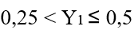
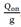
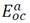
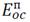
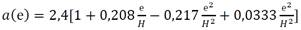
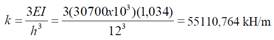
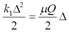
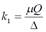
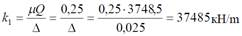
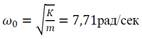

Oʻzbekiston Respublikasi qurilish va uy-joy kommunal xoʻjaligi vazirining
SHNQ 2.01.20-24 “Seysmik hududlarda transport inshootlari qurilishi” shaharsozlik normalari va qoidalarini tasdiqlash toʻgʻrisida
[Oʻzbekiston Respublikasi Adliya vazirligi tomonidan 2024-yil 19-avgustda hisobga olindi, hisob raqami 274]
Oʻzbekiston Respublikasining Shaharsozlik kodeksi hamda Vazirlar Mahkamasining 2024-yil 23-apreldagi 231-son “Qurilish sohasidagi normativ hujjatlarni xalqaro standartlar bilan uygʻunlashtirish chora-tadbirlari toʻgʻrisida”gi qaroriga muvofiq buyuraman:
1. SHNQ 2.01.20-24 “Seysmik hududlarda transport inshootlari qurilishi” shaharsozlik normalari va qoidalari ilovaga muvofiq tasdiqlansin.
2. Quyidagilar oʻz kuchini yoʻqotgan deb topilsin:
Oʻzbekiston Respublikasi davlat arxitektura va qurilish qoʻmitasi raisining 2015-yil 30-oktabrdagi 158-son buyrugʻi bilan tasdiqlangan SHNQ 2.01.20-16 “Seysmik hududlarda transport inshootlari qurilishi” shaharsozlik normalari va qoidalari;
Oʻzbekiston Respublikasi qurilish vazirining 2019-yil 27-sentabrdagi 438-son buyrugʻi bilan tasdiqlangan SHNQ 2.01.20-16 “Seysmik hududlarda transport inshootlari qurilishi” shaharsozlik normalari va qoidalariga kiritilgan 1-son oʻzgartirish.
3. Mazkur buyruq Oʻzbekiston Respublikasi Favqulodda vaziyatlar vazirligi, Transport vazirligi hamda Fanlar akademiyasi bilan kelishilgan.
4. Ushbu buyruq rasmiy eʼlon qilingan kundan eʼtiboran kuchga kiradi.
Favqulodda vaziyatlar vaziri A. KULDASHEV
Transport vaziri I. MAXKAMOV
Oʻzbekiston Respublikasi Fanlar akademiyasining prezidenti v.v.b. S. MIRZAYEV
Oʻzbekiston Respublikasi qurilish va uy-joy kommunal xoʻjaligi vazirining 2024-yil 15-iyuldagi 01/2-32-son buyrugʻiga
ILOVA
SHNQ 2.01.20-24 “Seysmik hududlarda transport inshootlari qurilishi” shaharsozlik normalari va qoidalari
Mazkur shaharsozlik normalari va qoidalari (bundan buyon matnda SHNQ deb yuritiladi) seysmik hududlarda transport inshootlarini loyihalash, qurish va rekonstruksiya qilishga oid talablarni belgilaydi.
Ushbu SHNQning talablari katta miqdordagi (50 tkm/km dan ortiq) yuklarga moʻljallangan temir yoʻllar va tezyurar temir yoʻllari (soatiga 200 km dan ortiq), seysmikligi 9 balldan yuqori boʻlgan qurilish maydonlari hamda V toifali temir yoʻllar va sanoat korxonalarining temir yoʻllaridagi inshootlarning zilzila paytida ishdan chiqishiga nisbatan tatbiq etilmaydi.
1-bob. Shaharsozlik normalari va qoidalariga havolalar
1. Mazkur SHNQda quyidagi shaharsozlik normalari va qoidalariga havolalar qoʻllanilgan:
SHNQ 2.06.11-04 “Seysmik tumanlarda qurilish. Gidrotexnik inshootlari”;
QMQ 2.01.03-19 “Seysmik hududlarda qurilish”;
QMQ 2.01.07-97 “Yuklar va taʼsirlar”;
SHNQ 2.02.01-19 “Bino va inshootlar asoslari”;
SHNQ 2.02.03-21 “Qoziqli poydevorlar”;
QMQ 2.05.05-96 “Temir yoʻl va avtomobil yoʻllari tunnellari”.
2-bob. Atamalar va taʼriflar
2. Ushbu SHNQda quyidagi atama va taʼriflardan foydalanilgan:
transport inshootlari — transport vositalarining harakatlanishini taʼminlash uchun moʻljallangan inshootlar;
zilzila akselerogrammasi — zilzila natijasida yer yuzasining maʼlum nuqtasida yuzaga keladigan absolyut tebranish tezlanishining vaqt birligida oʻzgarishi;
seysmik taʼsir — seysmik tezlanishni eksperimental kuzatuv yoki hisobiy yoʻl bilan aniqlanadigan seysmik kuch vektori;
seysmik mikrotumanlashtirish (SMT) — maydondagi grunt tebranishining koʻrsatkichlari va seysmik taʼsirga gruntning xossalari, xususiyatlari, relyef taʼsirini prognozlashtirish boʻyicha muhandis-geologik va seysmometrik ishlar majmui.
3. Ushbu SHNQda quyidagi qisqartmalar qoʻllanilgan:
SMT — seysmik mikrotumanlashtirish;
MSX — muhandislik seysmotik xizmati.
6. Transport inshootlarini loyihalashda quyidagi parametrlar hisobga olinishi kerak:
kutiladigan seysmik taʼsirlarning ballardagi intensivligi;
asos tebranishlarining tezlanishi;
seysmik taʼsirlarning takroriyligi kabi qurilish hududining asosiy seysmologik holati.
Inshootlar uchun qurilish hududining seysmikligi loyihaviy kuchdagi zilzilaning oʻrtacha chastotasi (takrorlanishi) asosida va MSK-64 shkalasidagi ballarda seysmik taʼsir intensivligining xaritasi ushbu SHNQning 2-ilovasi boʻyicha aniqlanishi kerak.
Transport inshootlari uchun quyidagi 1-jadvalga muvofiq masʼullik toifalarini hisobga olishga yoʻl qoʻyiladi.
| 1-jadval |
Masʼullik toifasi | Transport inshootning tavsifi |
I | Temir yoʻllar va avtomobil yoʻllaridagi, metro yoʻnalishlari, tezyurar shahar yoʻllari va magistral koʻchalardagi sinfidan tashqari koʻpriklar, tonnellar, viaduklar, galereyalar, yoʻl oʻtkazgichlar, estakadalar (uzunligi 500 m dan ortiq), magistral quvurlarni oʻtqazuvchi koʻpriklar va tonnellar, shahar yoʻllarida, umumiy tarmoqdagi yoʻllarda koʻp pogʻonali transport kesishmalari) |
II | Ommaviy qurilishda normal masʼullikdagi (I — III toifadagi temir yoʻllar va avtomobil yoʻllari, shuningdek tezyurar shahar va magistral koʻchalari, uzunligi 500 m dan oshmaydigan koʻpriklar, tonnellar va boshqa sunʼiy inshootlar) |
III | Ommaviy qurilishda past masʼullikdagi (IV-V toifali temir yoʻllar, sanoat korxonalari temir yoʻllari va III, IV, V, IIIp, IVp toifali avtomobil yoʻllaridagi sunʼiy inshootlar, shuningdek barcha toifali yoʻllardagi balandligi 10 m dan kam boʻlgan koʻtarmalar, oʻymalar, shamollatish va drenaj tonnellari, suvoʻtkazgich quvurlari, yoʻlovchi platformalari) |
Inshootning masʼulligi quyidagi holatlarda hisobga olinishi kerak:
umumiy seysmik tumanlashtirish (UST) xaritasini tanlashda;
qurilish maydonining hisobiy seysmikligini va seysmik mikrotumanlashtirilishini (SMT) aniqlashtirishda;
loyihalashtirilgan inshootlarni ilmiy-texnik kuzatuvini tashkil etishda;
antiseysmik tadbirlar turlari va hajmlarini ishlab chiqishda;
obyektning foydalanish bosqichida MSX tashkil etishda.
7. Seysmik taʼsirlarning intensivligi va takroriyligi mazkur SHNQning 1 va 2-ilovalari boʻyicha qabul qilinadi.
Ushbu SHNQning 1-ilovasida keltirilgan seysmik taʼsirlarning intensivligi va takroriyligi oʻrtacha seysmiklik xossaga ega gruntlardan tashkil topgan hududlarga mos kelishi lozim.
Masʼulligi I toifa boʻlgan transport inshootlari uchun loyihalar maxsus muhandislik seysmologik tadqiqotlar maʼlumotlarini hisobga olgan holda ishlab chiqilishi kerak.
8. Masʼulligi III toifa transport inshootlari uchun hisobiy seysmiklik qurilish maydoni seysmikligidan bir ball kichik qilib qabul qilishga yoʻl qoʻyiladi.
9. Yoʻllardagi sunʼiy inshootlar, qurilish maydonlari, koʻtarma va oʻymalar qurilish maydonlarining seysmikligi mazkur SHNQning 6-ilovasidagi umumiy muhandislik-geologik tadqiqotlar maʼlumotlari asosida hamda mazkur SHNQning 11-bandida keltirilgan talablarni hisobga olgan holda aniqlanishi kerak.
10. Qurilish maydonchasining seysmikligi 6 ball va undan yuqori boʻlgan hududlar SMT xaritasi asosida aniqlanishi lozim.
SMT xaritalari mavjud boʻlmasa, qurilish maydonchasining seysmikligi hududning seysmikligi va muhandislik-geologik izlanish natijalari asosida belgilanishi kerak.
11. Transport inshootlarini loyihalashda quyidagilarni oʻziga xos muhandis-geologik sharoitlar (murakkab relyefli va geologiyali maydonlar, daryolar oʻzani va oqimi, yer osti sunʼiy boʻshliqlari) deb hisoblash lozim:
30 mm gacha qum-guruntli magmatik jinslardan tashkil topgan kam namlangan boʻlakli gruntlar;
shagʻalli zich va oʻrta zichlikdagi suvga toʻygan qumlarni seysmik xususiyatlari boʻyicha II toifali gruntlar;
konsistensiya koʻrsatgichi

boʻlgan tuproqli gruntlarda gʻovaklik e<0,9 boʻlgan suglinok va tuproq, e<0,7 boʻlgan supeslarni seysmik xususiyatlari boʻyicha III toifali gruntlar.
12. Tonnellar qurilish maydonlari seysmikligini ular joylashgan gruntning seysmik xususiyatlaridan kelib chiqib aniqlanishi kerak.
13. Chuqur joylashgan poydevorli koʻprik tayanchlari quyidagicha aniqlanishi lozim:
qurilish maydonining seysmikligi tabiiy yer yuzasidan hisoblab;
grunt kesilganida kesilgandan pastki grunt yuzasidan hisoblab;
yuqori 10 m lik qatlam gruntning seysmik xususiyatlariga bogʻliq holda.
14. Transport inshootini hisoblashda poydevorni kesib oʻtuvchi grunt massasining induksiya kuchi hisobga olinishi hamda qurilish maydonining seysmikligi poydevorlar joylashuv sathidagi gruntning seysmik xususiyatlariga bogʻliq holda aniqlanishi kerak.
15. Koʻtarmalar va ular ostidagi quvurlar qurilish maydonlarining seysmikligini koʻtarma asosining yuqori 10 m qatlami gruntining seysmik xususiyatlariga bogʻliq holda aniqlashga yoʻl qoʻyiladi.
16. Qurilish maydonining seysmikligini oʻyma chetidan 10 m lik qatlami gruntning seysmik xususiyatlariga bogʻliq holda aniqlashga yoʻl qoʻyiladi.
17. Seysmik jihatdan quyidagi asoslar noqulay hisoblanishi kerak:
yon bagʻri nishabligi 15° dan ortiq;
siljiydigan tekisliklarning yaqinligi;
jinslarning fizik-geologik jarayonlar taʼsirida buzilganligi;
togʻ yonbagʻridan koʻchib tushgan xarsang uyumlari, koʻchkilar, loyqalanishlar, oʻpirilishlar, karst, kon qazilmalari, sel ketish xavfi mavjud qurilish maydonchalari seysmik jihatidan noturgʻun;
poydevor tovonidan 10 m qalinlikdagi grunt qatlami chegarasida 3 m dan ortiq qalinlikda zichlanmagan namlangan va suvga toʻyingan qumlar (shagʻalli, gʻovaklik koeffitsiyenti e≥0,7 boʻlgan yirik va oʻrta yiriklikda, gʻovaklik koeffitsiyenti e≥0,6 boʻlgan mayda va changsimon qumlar),
qumoq, qumloq va gilli choʻkindi (gil) gruntlar,
toʻkma qumlar va changsimon gillardan.
Bunda, ushbu asoslarda bino (inshoot)larni qurish zaruriyati boʻlganda, qumli gruntlarning seysmiklik xossalarini yaxshilash, choʻkindi (gil) va suvga toʻyingan gruntlarni mustahkam gruntlarga almashtirish boʻyicha tadbirlar oʻtkazilishi, konstruksiyalarni kuchaytirish boʻyicha qoʻshimcha choralar koʻrilishi kerak.
18. Mazkur SHNQning 17-bandida keltirilgan maydonlarning hisobiy seysmikligi ushbu SHNQning 6-ilovasiga muvofiq grunt seysmiklik xossalarini qaytadan koʻrish va takroriy seysmik mikrotumanlashtirish natijalarini eʼtiborga olgan holda aniqlanishi kerak.
Bunda, SMT xaritasida mavjud maydonchalar uchun takroriy seysmik mikrotumanlashtirish natijalari asosida belgilanishi lozim.
19. Seysmik faol hududlarda transport inshootlarini loyihalash, qurish va rekonstruksiya qilishda quyidagilar taʼminlanishi kerak.
zilziladan himoya qilish chora-tadbirlari obyektning yuk koʻtaruvchi konstruksiyalari va unga yondashgan yon bagʻir tutashuvlari qulamasligi;
buzilishlarga olib kelmasligi;
zilzilaning hisobiy kuchi va zarar yetkazuvchi omillarga bardosh bera olishi;
zilzila taʼsirida ijtimoiy yoʻqotishlar minimallashtirishi;
iqtisodiy va ekologik zararlarni minimallashtirishi;
hisobiy intensivlikdagi zilziladan soʻng transport inshootini xavfsiz ekspluatatsiya qilinishi (ehtimol, vaqtinchalik cheklovlar bilan).
20. Transport inshootlarining zilzilabardoshligini taʼminlash uchun seysmik hududlarda transport inshootlarini loyihalashda seysmik izolyatsiyalash va inshootning dinamik zoʻriqishini tartibga solishning boshqa tizimlaridan foydalanishga yoʻl qoʻyiladi.
21. Antiseysmik chora-tadbirlar quyidagilarni hisobga olingan holda amalga oshirilishi kerak:
inshootning asosiy yuk koʻtaruvchi konstruksiyalarini buzilmasdan seysmik taʼsirning hisobiy kuchiga bardosh berishini taʼminlashi;
zilzila natijasida transport vositalarining avariyalariga sabab boʻluvchi yoki transport inshootida harakatni uzoq muddatga toʻxtashiga olib keluvchi shikastlanishlarni paydo boʻlmasligi.
22. Seysmik hududlarda transport inshootlarini qurishda antiseysmik chora-tadbirlardan tashqari zilzilalarga qoʻshimcha tabiiy hodisalar (koʻchkilar, agʻdarilishlar, sellar, qor koʻchkilari, gruntning sachratma-maydalanishi va boshqalar)dan inshootlarni himoya qilish boʻyicha muhandislik tadbirlarni amalga oshirish zarur.
23. Zilzila vaqtida masʼulligi I toifadagi transport inshootlari konstruksiyalarining ishlashi boʻyicha ishonchli maʼlumotlarni olish uchun inshootlar loyihalarida MSX stansiyalarini oʻrnatilishi zarur.
4-bob. Yoʻllarni trassalash
24. Seysmikligi 7, 8 va 9 ball boʻlgan hududlarda, xavfli geologik jarayonlarda, togʻli va togʻ oldi hududlarida yoʻllarni trassalashda marshrutning joylashishi tektonik yer yoriqlari, tosh qulashlari, toshqinlar, koʻchkilar, qor koʻchkilari, sel oqimlari, gruntlarni karst boʻshliqlaridagi chuqurliklarga agʻdarilishi mumkin boʻlgan zonalarni aylanib oʻtish variantlari, himoya inshootlarini (tutib ushlab turish va tirkama devorlar, galereyalar va boshqalar) qurish yoki xavfli hududni koʻprik yoki tonnel yordamida yengib oʻtish variantlari bilan tanlanishi kerak.
25. Seysmikligi 8 va 9 ballik hududlarda yoʻllarda qiyalik ogʻishi 1:1,5 dan kata boʻlgan qoyatosh boʻlmagan qiyaliklarda trassalash faqat maxsus muhandis-geologik izlanishlar natijalari asosida yoʻl qoʻyiladi.
Yoʻllarni qiyalik ogʻishi 1:1 va undan ortiq boʻlgan bir necha qiyaliklarda trassalashga yoʻl qoʻyilmaydi.
26. Sel oqimi koʻp boʻlgan togʻli vodiylarda trassani koʻndalang jarlardan vodiyga tushayotgan yoʻlning tepasi yoki pastida selni oʻtkazish uchun sunʼiy inshootlar oʻrnatgan holda sel oqimlari harakati sathidan yuqorida joylashtirilishi zarur.
27. Yoʻlning trassasi zilzilalar paytida yuzaga keladigan tektonik yorilishlarning yer yuzasiga chiqadigan joylarini chetlab oʻtib tanlanishi kerak.
Tektonik yoriqlarni yuzaga chiqish mumkinligi, ularning turi va boshqa xususiyatlari seysmotektonik tadqiqotlar maʼlumotlarini oʻrganish davrida aniqlanishi lozim.
28. Yoʻllarni tadqiq qilish va loyihalashda zilzilalarning ijtimoiy oqibatlaridan kelib chiqadigan quyidagi talablarni taʼminlashi kerak:
yoʻl tarmogʻi tabiiy ofat hududining transportdan foydalanish imkoniyatini taʼminlashi, bunda halokatli zilzila sodir boʻlgan hududda qidiruv, qutqaruv va avariyaviy tiklash ishlarini darhol boshlash imkoniyati borligini;
yoʻlning oʻtkazuvchanligi cheklovlarni hisobga olgan holda halokatli tebranishlarning takrorlanish ehtimoli toʻgʻrisidagi qisqa muddatli geofizik maʼlumotlarni oldindan aniqlash yoki sunʼiy va boshqa inshootlarning tahdidli holati bilan bogʻliq tabiiy ofat zonasidan aholini zudlik bilan evakuatsiya qilish uchun yetarli darajada boʻlishini.
5-bob. Yoʻl polotnosi va temir yoʻlining ustki tuzilishi
29. Hisobiy seysmikligi 9 ball va koʻtarmalar (oʻyiqlar chuqurligi) balandligi 4 m dan yuqori boʻlgan, qoyatoshdan tashkil topgan yoʻl poyining yon bagʻri, seysmik boʻlmagan hududlarda loyihalayotganiga nisbatan 1:0,25 ga yotiq qilib loyihalanishi lozim.
Ogʻishligi 1:2,25 va undan kichik boʻlgan qiyaliklarni, seysmik boʻlmagan hududlar kabi loyihalashga yoʻl qoʻyiladi.
30. Qoyatosh gruntlar, massasi boʻyicha 20 foizdan kam mayda toʻldirgichlarga ega boʻlakli gruntlarda joylashgan oʻyiqlar va yarim oʻyiqlarni, seysmik boʻlmagan hududlar normalari boʻyicha loyihalash yoʻl qoʻyiladi.
31. Suyuqplastikli gilli gruntlardan tashkil topgan joylarda koʻtarmalarni oʻrnatishda zaif gruntlarni sementlash yoʻli bilan almashtirish yoki mustahkamlash kerak.
32. Temir yoʻl yoki I toifali avtomobil yoʻllari koʻtarmalarini suvga toʻyingan asos gruntlarida tiklashda, drenaj qurilmalarini tashkil etish orqali ularni quritish lozim.
33. Koʻtarmani tiklash uchun turli gruntlardan foydalanilgan holda, toʻkishni asos qismidagi ogʻir gruntlardan boshlab asta sekin koʻtarma yuqorisiga nisbatan yengilroq gruntlarga oʻtib bajarish kerak.
34. Yoʻl poyini qiyaliklarda tiklashda asosiy maydonini toʻlaligicha ogʻishiga kesib kiritilgan qatorda, yoki toʻlaligicha koʻtarmada joylashtirish, bunda oʻtish hududlarining uzunligi minimal boʻlishi zarur.
35. Qiyalik ogʻishi 1:1,5 dan kichik boʻlganda, toʻkmalar koʻtarilishini, mexanizatsiyalashtirilgan usulda bajariluvchi kengligi 3 m dan kam boʻlmagan yotiq pogʻona (berma)larda amalga oshirish yoʻl qoʻyiladi.
36. Qoyatoshli toʻkiluvchan qiyaliklarda joylashgan temir yoʻl toʻshamasini loyihalashda yoʻllarni ogʻib ketishini oldini olish va himoya choralari boʻlishi lozim.
Hisobiy seysmiklik 8 va 9 ball boʻlganda, himoya choralari sifatida asosiy maydoncha va qiyalikni ustki qismi orasida ushlab qoluvchi transheyalar qoʻllanilishi kerak.
Bunda, ularning oʻlchamlari toʻkiladigan gruntlarning ehtimoliy hajmidan kelib chiqqan holda aniqlanishi lozim.
Texnik iqtisodiy asoslantirilganda ushlab qoluvchi devorlar va boshqa toʻkilishga qarshi himoya inshootlarini qoʻllanilishiga yoʻl qoʻyiladi.
37. Hisobiy seysmiklik 8 va 9 ball boʻlganda, 1:2 qiyalikdan ortiq boʻlgan temir yoʻl koʻtarmasining ostki qiyaligini tirkama devorlar bilan mustahkamlash lozim.
38. Seysmikligi 8 va 9 ball boʻlgan hududlarda temir yoʻlni shagʻalli ballastda yotqizilishi lozim.
1-§. Zilzilabardoshlikni taʼminlashga qaratilgan talablar
39. Koʻpriklar, tektonik yoriqlar zonalaridan tashqarida, seysmik jihatdan qulay maydonlarda, barqaror yonbagʻirli daryo vodiylari hududlarida joylashgan boʻlishi kerak.
40. Koʻprikning zilzilabardoshligiga quyidagilar bilan erishishga yoʻl qoʻyiladi:
uning tizimini toʻgʻri tanlash;
seysmik yuklarni tayanchlarga oʻtkazishning oqilona sxemalarini qoʻllash;
hisob-kitoblar boʻyicha yuk koʻtaruvchi konstruksiyalarni kuchaytirish;
maxsus antiseysmik konstruktiv chora-tadbirlarni amalga oshirish;
kuchli seysmik vositalarni qoʻllash va plastik deformatsiyalarning rivojlanishiga imkon beruvchi yengil va mustahkam materiallarni ishlatish va yuqori sifatli qurilish montaj ishlarini olib borish.
41. Daryo oʻzanlarida, terassa va qiyaliklarda ostonalar va toʻgʻonlarni hosil qiluvchi seysmotektonik dislokatsiyalar (tektonik kesimlar va toʻsiqlar) hududlari koʻpriklar uchun noqulay hududlar deb hisoblanishi kerak.
42. Katta daryolar ustidan oʻtuvchi koʻprik kechuvlari mustahkam va nisbatan past siqiluvchi gruntlarda tayanchlar poydevorini oʻrnatishga imkon beradigan muhandislik va geologik sharoitlarga ega boʻlgan daryo vodiylarining toʻgʻri hududlarida joylashtirilishi lozim.
43. Faol tektonik yoriq bilan kesishgan joyda koʻprik qurilishini oldini olishning iloji boʻlmaganda quyidagilar amalga oshirilishi kerak:
tayanchlarning poydevori togʻ jinslarining tektonik maydalanish zonasidan tashqaridagi yoriqlarga olib chiqilishi;
tayanchlarning fermaosti maydonchalari kengaytirilishi;
koʻprikning oʻqi boʻylab alohida tayanchlarning siljishi paytida konstruksiyalarning qulashiga toʻsqinlik qiluvchi uzlukli oraliq qurilmalarni zanjirli bogʻlanishlarga birlashtirilishi.
44. Seysmik jihatdan barqaror boʻlmagan qiyaliklarda koʻpriklarni loyihalashda hisobiy kuchga ega zilzilada gruntning ustuvorligini taʼminlaydigan chora-tadbirlar majmuasi (drenajlash, suvchiqarish, tirkama devorlarni oʻrnatish) boʻlishi kerak.
45. Yemirilgan qoyatosh jinslaridan tashkil topgan tik yonli vodiylar orqali oʻtadigan viaduklarni loyihalashda viaduk kamarida seysmik qulashlarga qarshi choralar koʻrish, shuningdek beqaror xarsanglarni olib tashlash va qiyaliklarni beton yoki toʻrli qoplama bilan mustahkamlashni koʻzda tutish kerak.
46. Sel oqimi xavfi yuqori boʻlgan daryo vodiylari boʻylab koʻprikning tayanchlari umumiy muhandislik-geologik tadqiqotlar maʼlumotlari asosida aniqlangan soʻnggi 100 yildagi sel oqimining maksimal darajasidan yuqori boʻlishi lozim.
47. Seysmik hududlarda, asosan toʻsinli uzlukli va uzluksiz oraliq qurilmalardan tashkil topgan koʻpriklar, rama (rom) tizimidagi koʻpriklar, shuningdek oraliq qurilmalari tayanchlarga sharnirli tirkalgan arkali koʻpriklar, osma va vantli koʻpriklarni qurish kerak.
Seysmikligi 9 ball, uzunligi 18 m dan katta boʻlgan toʻsinli uzlukli oraliq qurilmali koʻpriklar loyihalarida, tayanchlardan oraliq qurilmalarni tushib ketishining oldini oluvchi antiseysmik qurilmalar boʻlishi lozim.
48. Arkali koʻpriklardan faqat qoyatoshli zaminlar mavjud boʻlganda foydalanishga yoʻl qoʻyiladi.
Gumbaz va arkalarning peshonalari massiv tayanchlarga tayanishi va imkon qadar eng past sathga joylashtirilishi kerak.
49. Baland estakadalarni loyihalashda egiluvchan juftlashtirilgan ustunli temir-beton tayanchlardan va boʻylamasiga harakatlanmaydigan tayanch qismlari bor tayanchlarga tirgaklangan uzluksiz oraliq qurilmalardan foydalanishga yoʻl qoʻyiladi.
50. Zilzila natijasida barcha koʻprik tizimlarining oraliq qurilmalarini joylashish holati oʻzgarmasligi kerak.
Oraliq qurilmalarning siljish va agʻdarilishiga qarshi ustuvorligi arkali va romli sharnirsiz koʻpriklarning oraliq qurilmalarini tayanchlar, seysmik tayanch qismlari va oraliq qurilmalari tayanch bilan bogʻlangan koʻpriklarning antiseysmik qurilmalari orqali taʼminlanishi lozim.
51. Monolit yadroli kontur bloklardan iborat yigʻma-monolit betonli tayanchlarning loyihalarida poydevor va fermaosti plitasiga bogʻlangan yadrosini hisobiy armatura bilan mustahkamlash, shuningdek armatura chiqishlari yordamida kontur bloklarni yadro bilan birlashtirishni yoki yigʻma elementlarni ishonchli bogʻlanishini belgilovchi boshqa usullar orqali taʼminlash kerak.
52. Koʻprik inshootlarining tayanchlarida sayoz joylashgan poydevorning taglarini yoki qoziqlar, ustunlar va qobiqlarning pastki uchlarini qoyatosh yoki katta donali toshloq gruntlarda, shagʻalli zich qumlarda, qattiq va yarim qattiq turkumli gilli gruntlarda oʻrnatilishini taʼminlash lozim.
53. Hisobiy seysmikligi 9 ball boʻlganda, qoyatoshsiz poydevorlardagi koʻpriklarning koʻndalang romli tayanchlari umumiy sayoz joylashgan poydevorga ega boʻlishi yoki barcha qoziqlar (ustunlar, qobiqlar) kallaklarini birlashtiruvchi plitaga tayanishi kerak.
54. Sayoz joylashgan poydevorlarning pastki qismi gorizontal boʻlishi, pogʻonali poydevorlarga faqat qoyatoshli asoslarga yoʻl qoʻyiladi.
55. Oʻrta va katta koʻpriklar uchun zamin ustida joylashgan poydevor plitasi (rostverk) boʻlgan qoziq tayanchlarini kesimlari 400x400 mm gacha yoki diametri 600 mm gacha boʻlgan qiya qoziqlar yordamida loyihalashga yoʻl qoʻyiladi.
Oʻrta va katta koʻpriklarning tayanchlari, shuningdek hisoblash yoʻli bilan aniqlangan va statik, dinamik sinovlar natijalariga koʻra, shuningdek (rostverk) plita gruntga koʻmilgan boʻlgan holda, kvadrat yoki aylana kesimli vertikal qoziqlar bilan ham loyihalashga yoʻl qoʻyiladi.
56. Seysmik hududlarda toʻsinli koʻprik tayanchlari asosan ustunli yoki rom turidagi monolit, yigʻma va yigʻma-monolit temir-beton konstruksiyalar hamda devor-tayanchlar shaklida loyihalanishi kerak.
Kesimlarning oʻlchamlari va tayanchlarni armaturalash hisoblash yoʻli bilan aniqlanishi lozim.
57. Armatura sifatida armaturali poʻlatdan yasalgan sterjenlardan foydalanishi, bunda romlarning ustunlari va tugunlarida plastik deformatsiyalarning rivojlanishiga imkon berishi kerak.
58. Seysmikligi 7 va 8 balli hududlarda, qoʻshimcha antiseysmik konstruktiv elementlari mavjud boʻlgan yigʻma, yigʻma-monolit va monolit beton tayanchlar ishlatilishiga yoʻl qoʻyiladi.
59. Seysmikligi 7, 8 va 9 ball boʻlgan va zilzila paytida oraliq qurilmalar joylashuvining ustuvorligini seysmik koʻrsatkichlar boʻyicha taʼminlashning iloji boʻlmaganda, antiseysmik yoki seysmik izolyatsiyalash qurilmalarini ishlatilishi orqali koʻprik konstruksiyalarini himoya qilish usullarini loyiha tarkibiga kiritish lozim.
60. Antiseysmik qurilmalar oraliq qurilmalarning gruntga qulashini (yiqilishini) oldini olish, asosiy toʻsinlarni keyinchalik tiralish maydonchalariga sakrab tushish hollarida buzilishini oldini olish, oraliq qurilmalarning tayanch usti qismlariga zarbalarini kamaytirish, tayanch qismlari va deformatsion choklarni normal ishlashini taʼminlash uchun ishlatilishi lozim.
61. Seysmik izolyatsiyalash qurilmalari zilzilalar paytida inshootga taalluqli energiyani tarqatish va kamaytirish orqali koʻpriklarga seysmik taʼsirlarni sezilarli darajada kamaytirish taʼminlanishi kerak.
Bunda, ushbu qurilmalar mazkur SHNQning 3-ilovasiga muvofiq koʻprikning oraliq chekka tayanchlari yuqori qismidagi oraliq qurilma osti maydoni yuzasiga oʻrnatilishi lozim.
62. Seysmik taʼsirga chidamli tayanch qismlar koʻprikning boʻylama va koʻndalang oʻqi boʻyicha taʼsir qiluvchi hisobiy yuklarni oraliq qurilmalardan tayanchlarga oʻtkazishi, shuningdek oraliq qurilmalarning tayanch tugunlarini sakrab siljishini oldini olishi kerak.
63. Seysmik taʼsirga chidamli tayanch qismlar deformatsion choklar bilan ajratilgan koʻprikning qoʻshni hududlarning mustaqil tebranishlariga, shuningdek koʻprik tayanchlari kallaklarining tebranish amplitudalaridagi farqi tufayli oraliq qurilmalarni buralishiga toʻsqinlik qilmasliklari zarur.
64. Deformatsion choklarning kengligini belgilashda ushbu chok bilan ajratilgan oraliq qurilmalarning chekkalaridagi nisbiy siljishlarni zilzila paytida hisobga olish kerak.
2-§. Seysmik taʼsirlarga hisoblashlar
65. Seysmik yuklar taʼsirida koʻpriklarni hisoblash yuk koʻtaruvchi konstruksiyalarning mustahkamligi va ustuvorligi, shuningdek koʻprik tayanchlari poydevori grunt asosining yuk koʻtaruvchanligi va deformatsion chok bilan ajratilgan koʻprikning rejadagi yondosh qismlarining chegaraviy nisbiy chiziqli va burchakli koʻchishlari boʻyicha amalga oshirilishi lozim.
66. Koʻpriklarni loyihalash va hisoblash seysmik taʼsirlarni hisobga olgan holda, doimiy yuk va taʼsirlar, harakatlanuvchi tayanch qismlardagi ishqalanish kuchlari, temir yoʻl, avtomobil yoʻllari va shahar yoʻllaridagi harakatlanuvchi tarkibdan tushadigan yuklar bilan birgalikda bajarilishi kerak.
Bunda, quyidagi doimiy yuklar va taʼsirlar hisobga olinishi zarur:
konstruksiyalarning oʻz ogʻirligi;
beton tirishishi va yoyiluvchanligining taʼsiri;
grunt choʻkishining taʼsiri;
temir-beton konstruksiyalarda oldindan zoʻriqtirishlarning taʼsiri;
koʻprik tizimidagi tartibga solinuvchi kuchlar (qatnov qismining temirbeton plitasi boʻlgan poʻlat oraliq qurilmalarda);
koʻtarma ogʻirligidan qirgʻoq tayanchiga grunt bosimi;
gidrostatik bosim (suv ogʻirlashtirishining taʼsiri);
tayanchlarga suv oqimining bosimi.
67. Tangensial, rolikli, sektorli va valikli harakatlanuvchi tayanch qismlarida, shuningdek ftoroplast qistirmalaridan iborat boʻlgan tayanch qismlarida ishqalanish kuchlari QMQ 2.05.05-96 ga muvofiq belgilanishi lozim.
Ishqalanish kuchlarini seysmik yuklar bilan birgalikda aniqlashda ishqalanish koeffitsiyenti koʻprik qurilish maydonchasidagi oʻrtacha yillik haroratga teng boʻlgan havo haroratiga mos ravishda topilishi kerak.
68. Seysmik yuklar va harakatlanuvchi tarkibdagi yuklarning birgalikdagi taʼsiri V toifali temir yoʻllardagi hamda IIIp, IV va IVp toifali avtomobil yoʻllarida loyihalanuvchi sanoat korxonalarining tashqi kirish va ichki yoʻllaridagi koʻpriklarni hisoblashda (loyihaviy topshiriqda koʻrsatilgan hollar bundan mustasno) hisobga olinmasligi lozim.
69. I — IV toifadagi temir yoʻl koʻpriklarini loyihalashda seysmik yuklar va harakatlanuvchi tarkibdan tushadigan yuklarning, shuningdek tormoz kuchining birgalikdagi taʼsirini hisobga olish kerak.
70. Seysmik yuklar temir yoʻl koʻpriklarini hisoblashda maxsus ogʻir vagonlardan tushadigan yuklar va harakatlanuvchi tarkibning gorizontal koʻndalang urilma taʼsiri bilan, shuningdek avtomobil va shahar yoʻllaridagi koʻpriklarni hisoblashda toʻrt oʻqli NK-100 transport vositasi koʻrinishidagi yuklar, avtomobillarning tormozidan va ularni yoʻl toʻsigʻiga urilishidan kelib chiqadigan yuklar bilan birga hisobga olinmasligi kerak.
71. Temir yoʻl koʻpriklari uchun harakatlanuvchi tarkibdan vertikal yuk QMQ 2.05.05-96 ga muvofiq taqsimlangan yuk sifatida olinishi kerak.
Koʻprik rejadagi egri chiziqda joylashganida, markazdan qochma kuchdan gorizontal koʻndalang yukni hisobga olish kerak.
72. Kapital inshootlar uchun har bir harakat tasmasida avtomobil va shahar yoʻllarining harakatlanuvchi tarkibidan normativ vertikal yuk 0,1K (tk/m) intensivlikdagi bir xil taqsimlangan yuk sifatida qabul qilinishi, bunda K koʻrsatkichi 14 ga teng deb olinishi kerak.
73. Seysmik taʼsirni hisobga olishda temir yoʻl, avtomobil va shahar yoʻllarining transport vositalaridan normativ yuklarga qoʻyiladigan dinamik koeffitsiyent 1,0 ga teng deb qabul qilinishi lozim.
74. Koʻpriklarni seysmik taʼsirlarni inobatga olib hisoblashda birga qoʻshilish koeffitsiyentlari koeffitsiyentlar nc ni quyidagi miqdorlarda qabul qilish kerak:
doimiy yuklar va taʼsirlar uchun, doimiy yuklar, shuningdek qoʻzgʻaluvchan tayanch qismlardagi doimiy hosil boʻluvchi ishqalanish taʼsiri bilan birgalikda hisobga olinuvchi seysmik taʼsirlar uchun — 1;
taʼsirlari avtomobil yoʻllari harakatlanuvchi tarkiblaridan tushuvchi yuklar taʼsirlari bilan birgalikda hisobga olinuvchi seysmik yuklar uchun — 0,8;
temir yoʻllardagi harakatlanuvchi tarkibdan tushuvchi yuklar uchun — 0,7;
avtomobil yoʻllari harakatlanuvchi tarkibidan tushuvchi yuklar uchun — 0,3.
75. Koʻpriklarni hisoblashda seysmik yuklarni tayanch asosi tebranishidan kelib chiqadigan koʻprik qismlari va harakatlanuvchi tarkibning inersial kuchlari, shuningdek tayanchlar bilan birga olinadigan suv massasining inersiya kuchi va gruntning seysmik bosimi shaklida hisobga olish kerak.
Koʻprik oʻqi boʻylab taʼsir qiluvchi seysmik yuklarni aniqlashda temir yoʻl transport tarkibining massasi hisobga olinmasligi lozim.
Koʻprikning boʻylama va koʻndalang oʻqi boʻyicha yoʻnaltirilgan grunt tebranishlarining gorizontal tarkibiy qismlaridan kelib chiqadigan seysmik yuklarni alohida hisobga olish kerak.
76. Koʻpriklar konstruksiyalarini ustuvorlikka hisoblashda va uzunligi 18 m dan katta boʻlgan oraliq qurilmalarni mustahkamlikka hisoblashda, gruntlar tebranishining tik tashkil qiluvchisi va yotiq tashkil qiluvchilarining bittasi tomonidan hosil qilingan seysmik yukni inobatga olinishi, grunt tebranishining tik tashkil qiluvchisi tomonidan hosil boʻlgan seysmik yukni 0,5 koeffitsiyentiga koʻpaytirish lozim.
77. Koʻprik konstruksiyalarining boshqacha hisoblarida, grunt tebranishining vertikal tashkil qiluvchisi tomonidan hosil qilingan seysmik yukni inobatga olmaslikka yoʻl qoʻyiladi.
78. Koʻprik qismlari massalaridan keladigan seysmik yuklar konstruksiyalarning elastik deformatsiyalanishini, shuningdek temir yoʻl transporti tarkibi ressorining muvofiqligini hisobga olgan holda spektral-modal usul bilan aniqlanishi lozim.
Koʻpriklarni loyihalashda toʻgʻridan-toʻgʻri dinamik usulda seysmik taʼsirni vaqt funksiyasi sifatida (tanlangan zilzila akselerogrammasi yozuvlarini keltirish bilan) asos seysmik harakatining yozuvlari toʻplami shaklida tekshirish hisob-kitoblarini amalga oshirishga yoʻl qoʻyiladi.
79. Koʻprik tizimida mustaqil tebranish tizimlari boʻlgan butun koʻprik uchun ham uning alohida qismlari uchun ham diskret hisoblash sxemalari qoʻllanilishi kerak.
Bunda, tizimning massasini inshoot boʻylab 5 — 10 nuqtada toʻplangan deb hisoblashga yoʻl qoʻyiladi.
Asoslangan hollarda, maʼlum bir inshootning simtiyasi, bir xilligi va boshqa strukturaviy xususiyatlarini hisobga oladigan soddalashtirilgan sxemalar boʻyicha hisob-kitoblarni amalga oshirishga yoʻl qoʻyiladi.
80. Toʻsinli koʻprikning oʻqi boʻylab yoʻnaltirilgan seysmik yukni aniqlashda, seysmik taʼsir ostida rolikli, sektorli va valikli harakatlanuvchi tayanch qismlarida, shuningdek ftoroplast qistirmalaridan iborat boʻlgan tayanch qismlarida ishqalanish kuchlari yengib oʻtilishini hisobga olish kerak.
Koʻprikning alohida qismlari uchun hisobiy sxemalarini tuzishga yoʻl qoʻyiladi.
Bunda, tayanchlarning har biri mazkur SHNQning 1-b-rasm va 2-rasmga muvofiq alohida konsol sterjeni sifatida ishlashi kerak.
Uzunlashtirilgan koʻpriklar uchun obyektning uzunligi boʻylab inshoot massalarining koʻchma tezlanishlari bir xil boʻlmasligiga yoʻl qoʻyiladi.
Massalar koʻchma tezlanishlaridagi farq inshootning sezilarli darajada uzunligi yoki qurilish maydonchasining seysmikligi bilan bogʻliq boʻlishi, bunda qoʻshni tayanchlar asoslaridagi grunt tebranishlari qarama-qarshi yoki bir xil fazalarda, biroq turli amplitudalarda sodir boʻlishiga yoʻl qoʻyiladi.
Tayanchlarning har xil tebranishlari taʼsirini aniqlash uchun koʻp tayanchli inshootlarning zilzilabardoshligini baholashda asoslangan hollarda hisoblashlarni tayanchlarning sinxron boʻlmagan tebranishini inobatga olgan holda amalga oshirishga yoʻl qoʻyiladi.
81. Koʻprikni koʻndalang taʼsirga hisoblashda uning hisoblash sxemasi sifatida oʻz tekisligiga perpendikulyar tebranishda toʻgʻridan-toʻgʻri rigel va ustunlarning sharnirli bogʻlanishlaridan iborat boʻlgan tekis rama sifatida foydalanishga mazkur SHNQning 1-v-rasmga muvofiq yoʻl qoʻyiladi.
Koʻprik tekisligida koʻchishlarni sterjenli tizimlardan tashkil topgan koʻprik qismlarini hisoblash sxemalarini tuzish mazkur SHNQning 4-ilovasida keltirilgan.
82. Temir yoʻllar, avtomobil va shahar yoʻllarining harakatlanuvchi tarkibidagi yuklar bilan seysmik taʼsirlar birga qoʻshilganda hisoblash sxemasida, shuningdek tayanchga ulashgan oraliq qurilmalardagi vaqtinchalik vertikal yuk umumiy massasining yarmini hisobga olinishi lozim.
83. Konstruksiyalar va harakatlanuvchi tarkibning normativ ogʻirligi ishonchlilik, qatnov qismi tasmasi va birga qoʻshilish koeffitsiyentlariga koʻpaytirilishi kerak.
Tayanchlar va poydevorlar suv osti qismlarining oʻz ogʻirliklari (massalari) gidrostatik bosimni hisobga olmasdan aniqlanishi lozim.
84. Bajariladigan hisoblarda tanlangan yoʻnalish boʻyicha k nuqtaga qoʻyilgan va koʻprikli inshoot xususiy tebranishlarining i-shakliga mos hisobiy seysmik yuk quyidagi formulalardan aniqlanadi:
Sik = K0KpK1AβiηikQk, (k=1,2,…..n) (1)
Sik = K0KpKsβiηikQk, Ks=K1A (2)
K0 — inshootning masʼullik koeffitsiyenti, uning qiymati I, II va III masʼullik toifalariga ega boʻlgan koʻpriklar uchun mos ravishda 1,2; 1,0; va 0,8 ga teng boʻlishi kerak;
Kp — QMQ 2.01.03-19 ga muvofiq zilzilalar takrorlanishini hisobga oluvchi koeffitsiyent.
K1 — zilzilalar paytida koʻprik konstruksiyasining yoriqlari va plastik deformatsiyalarining seysmik yukka taʼsirini hisobga oladigan koeffitsiyent (uning qiymati I, II va III masʼullik toifalariga ega boʻlgan koʻpriklar uchun mos ravishda 0,5; 0,37; va 0,25 ga teng qabul qilinadi);
A — dastlabki seysmiklikka toʻgʻri keladigan, gruntning gorizontal tebranishlari tezlanishining eng katta amplitudasi (A ning qiymati MSK-64 shkalasi boʻyicha dastlabki seysmiklikka mos ravishda 7, 8 va 9 ball boʻlgan 0,1, 0,2 va 0,4 larga teng deb qabul qilinadi);
βi — 3-formula boʻyicha olingan qiymati 2,7 dan koʻp va 0,8 dan kam boʻlmagan, koʻprik xususiy tebranishlarining i-shakliga mos keladigan dinamik koeffitsiyent:
Ti — koʻprik xususiy tebranishlarining i-shakliga muvofiq koʻprikning xususiy tebranishlar davri son qiymati;
ηik — koʻprik i-shakli boʻyicha tebranganda erkin tebranishlar shaklining koeffitsiyenti;
Qk — temir yoʻl, avtomobil va shahar yoʻllarining harakatlanuvchi tarkibidan tushuvchi yuklarni va tayanchlarga birikuvchi suv massasini hisobga olgan holda aniqlanadigan konstruksiyaning k nuqtasiga taalluqli hisobiy ogʻirligi.
Koʻprikning tebranish shakli koeffitsiyenti (ηik) quyidagi formuladan foydalanib hisoblanishi kerak:
xik va xij — inshootni i-shakli boʻyicha erkin tebranganida k hamda j nuqtalaridagi koʻchishlari;
Qj — j nuqtaga keltirilgan inshootning hisobiy ogʻirligi.
Koʻpriklarning chastotalari va tebranish shakllarini aniqlashda inshoot konstruksiyalarini (elementlarini) tebranishdagi soʻnish xususiyatini hisobga olishga yoʻl qoʻyiladi.
Tayanch massasini k
pr=0,23 keltirish koeffitsiyentini hisobga olgan holda, konsolning massani keltirish markaziga qoʻyish, bunda m
pr =

, bu yerda Q
op — tayanchning ogʻirligi deb hisoblanishi kerak.
Seysmik yuklarni aniqlashning normativ usulini baholaganda, koʻprik konstruksiyalari uchun mintaqaviy va mahalliy sharoitga koʻra olinadigan dinamik koeffitsiyentning βi bir nechta egri chiziqlaridan foydalanish lozim.
Bunda, seysmik yuklarni hisoblash jarayonida barcha hududlar va qurilish maydonchalari uchun dinamik koeffitsiyentning qabul qilinishi, biroq uni hisoblash usulining oʻtgan zilzilalar tajribasi bilan mos kelishi kerak.
85. Sanoat va fuqarolik inshootlari uchun qabul qilingan dinamik koeffitsiyent oʻtgan zilzilalar haqidagi maʼlumotlarni hisobga olgan holda belgilanishi, bunda koʻpriklar va boshqa maxsus muhandislik inshootlarining zilzilabardoshligini baholash va izlanishlar olib borilish kerak.
86. Koʻpriklarni zilzilabardoshlikka hisoblash mazkur SHNQning 5-ilovasiga muvofiq amalga oshirilishi zarur.
87. Seysmik boʻylama va koʻndalang kuchlarning, egilish va buralish momentlarning hisobiy qiymatlari inshoot xususiy tebranishlarining alohida shakllariga mos keladigan seysmik yukka kuchlarni hisoblash yoʻli bilan quyidagi formuladan topilishi kerak:
Nr — koʻriladigan kesimdagi hisobiy kuch;
nr — hisoblashda inobatga olingan inshootning tebranishlari shakllari soni;
Nj — inshoot xususiy tebranishlarining i-shakliga mos keladigan koʻrilayotgan kesimdagi tashqi yukdan topiluvchi ichki kuch.
88. Birinchi (asosiy) tebranish davri 0,4 s dan kam boʻlgan koʻprik inshootlari faqat birinchi tebranish shaklini inobatga olgan holda hisoblanishga yoʻl qoʻyiladi.
89. Seysmik taʼsirlarni hisobga olgan holda, agʻdarilish va surilishga qarshi ustuvorliklikka koʻprik konstruksiyalarini hisoblash QMQ 2.05.05-96 ga muvofiq amalga oshirilishi kerak.
1-rasm. Oddiy toʻsinli koʻpriklar uchun hisoblash sxemalarining keltirilishi:
a — konstruktiv sxema; b — koʻprik tayanchlarida koʻndalang inersiya yuklarni hisoblash sxemasi; s — koʻprik tayanchlarida boʻylama inersiya yuklarni baholashdagi hisoblash
2-rasm. Inshootni konsol koʻrinishidagi hisoblash modeli
90. Hisobiy seysmiklik 9 ball boʻlganda, koʻprik oraliq qurilmalarining tayanch tugunlaridagi qismini agʻdarilishdan saqlaydigan zilzilabardosh tayanch qismlari va ankerli antiseysmik qurilmalardagi kuchlar, konstruksiyaning oʻz ogʻirligidan chiquvchi tayanch vertikal reaksiyaning 10 foizdan kam boʻlmasligi kerak.
91. Tayanch maydonchalariga koʻprik tayanch qismlarini siljishdan saqlash uchun oʻrnatiladigan anker boltlarini hisoblashda, ishonchlilik koeffitsiyentini γf =1,5 ga teng deb qabul qilish zarur.
Anker boltlarini diametri kamida 25 mm boʻlishi, betonga yotqizish uzunligi esa uning 10 dm dan kam boʻlmasligi kerak.
92. Koʻprik konstruksiyalarini agʻdarilishga qarshi ustuvorlikka hisoblashda ish sharoitlari koeffitsiyentini quyidagicha qabul qilish lozim:
alohida tayanchlarga tiraluvchi konstruksiyalar uchun — 1 m;
qoyatosh asoslardagi beton konstruksiyalar va poydevorlar kesimlarini tekshirishda — 0,9 m;
qoyatosh boʻlmagan asoslardagi poydevorlarni tekshirishda — 0,8 m.
Siljishga qarshi ustuvorlikka hisoblashda ish sharoiti koeffitsiyentini QMQ 2.05.05-96 boʻyicha 0,9 ga teng deb qabul qilish kerak.
93. Sayoz joylashgan poydevorlarni yuk koʻtarish qobiliyati boʻyicha hisoblashda va qoziqlar yuk koʻtarish qobiliyatini (grunt boʻyicha) aniqlashda, seysmik taʼsirlar kuchini loyihalashda SHNQ 2.02.01-19 hamda SHNQ 2.02.03-21da belgilangan talablar inobatga olinishi lozim.
94. Sayoz joylashgan poydevorlarni loyihalashda poydevorlar asosi boʻyicha kesimning ogʻirlik markaziga nisbatan boʻlgan faol kuchlarining teng taʼsir qiluvchisi eo quyidagilar bilan chegaralanishi kerak:
qoyatosh boʻlmagan gruntlarda joylashgan poydevorlar asosi boʻyicha kesimlarda — eo≤1,5R;
qoyatosh gruntlarda joylashgan poydevorlar asosi boʻyicha kesimlarda — eo≤2,0R;
R — QMQ 2.05.05-96 ga muvofiq kesimining eng koʻp yuklangan cheti tomonidan poydevor asosi boʻyicha kesimi yadrosining radiusi.
95. Tayanch atrofidagi daryo suvi eng past sathi (mejen)ning chuqurligi 5 m dan kata boʻlsa, koʻprik tayanchlarini suvning seysmik bosimini inobatga olib hisoblash lozim.
Seysmik suv bosimi tayanchga qoʻshib olinuvchi suv massasidan inersiya yuki sifatida topilishi, bunda tayanch oldidagi suv havzasi chuqurligini aniqlashdagi tagining yuzasi mahalliy yuvilish oʻrasini inobatga olmagan holda qabul qilinishi kerak.
96. Koʻpriklarning chekka tayanchlari (qirgʻoq tayanchlari) ularga birlashuvchi koʻtarma gruntidagi inersiya kuchlarini va seysmik taʼsir paytida gruntning ichki ishqalanish burchagini oʻzgarishini hisobga olgan holda Kulon formulasi boʻyicha topiladigan gruntlarining seysmik bosimi taʼsiriga hisoblanishi lozim.
Bunda, koʻpriklarning qirgʻoq tayanchlari gorizontal yuzali toʻkmaning ogʻirligidan tayanchning vertikal nuqtasiga tushuvchi seysmik faol gorizontal bosimni hamda gorizontal toʻkmaning yuzasiga bir nuqtada jamlangan yoki tarqalgan vertikal yuklar ogʻirligining bosimini hisobga olgan holda turgʻunlik va mustahkamlikka hisoblash lozim.
97. Hisobiy seysmikligi 7, 8 va 9 ballar uchun grunt ichki ishqalanish burchagining kamayishi mos ravishda 1,5°, 3° va 6° deb qabul qilinishi lozim.
7-bob. Koʻtarmalar ostidagi quvurlar
98. Seysmikligi 9 balli hisoblarda imkoni boricha temir-beton poydevorli va yopiq konturli jamlanmalardan tashkil topgan quvurlar qoʻllanilishi lozim.
Jamlanmalar uzunligi 2 m dan kam boʻlmagan holda qabul qilinishi kerak.
99. Seysmikligi 9 balli hisoblarda individual yassi temir-beton orayopmali toʻgʻri burchakli quvurlardan foydalanish hamda quyidagi tadbirlarni bajarish zarur:
quvurlarning tik devorchalari poydevor bilan bikr holda birlashgan va konstruksiya hisobiy armaturalash;
oʻrnatilayotgan orayopma plitalari temirbeton tirgakli tayanch devorchalarda qotirilishi;
alohida poydevorlar oralarida tirgaklar oʻrnatilishi.
100. Toʻrtburchak kesimli quvurlarning seysmik taʼsirlarga hisobi 8 va 9-bobda keltirilgan formulalar yordamida bajarilishiga yoʻl qoʻyiladi.
101. Kichkina koʻprikni quvur bilan almashtirishda suv oʻtkazgich tomonidan hisobiy suv oqimini kamaytirishga yoʻl qoʻyilmaydi.
102. Seysmik hududlarda yoʻl tarmogʻini rivojlantirilishini hisobga olgan holda, koʻtarmalar ostidagi quvurlar va kichik koʻpriklar orqali oʻtadigan hisobiy suv oqimi sarfini ehtimoliydan oshirishga yoʻl qoʻyilmaydi.
103. Quruq usulda toshdevor qurish, uzunligi 50 m dan katta boʻlmagan tirkama devorlar (8 va 9 balli hisobiy seysmiklikdagi, tosh terishni quruq usulda bajarish yoʻl qoʻyilmaydigan temir yoʻl va avtomobil yoʻllaridagi tirkama devorlardan tashqari) uchun yoʻl qoʻyiladi.
Notoʻgʻri koʻrinishdagi toshlardan terilgan, balandligi 5 m va undan katta boʻlgan tirkama devorlarda, balandligi boʻyicha har 3 m da yaxlit temir-beton belbogʻlar oʻrnatish lozim.
104. Tirkama devorlar balandligi, poydevorlar asoslaridan hisoblab quyidagi miqdorlardan oshmasligi lozim:
beton devorlar hisobiy seysmikligi 8 ballda — 12 m dan;
butobeton va qorishmali terilgan devorlar:
hisobiy seysmiklik 8 ballda — 12 m dan;
avtomobil yoʻllarida — 10 m dan;
quruq usulda terilgan devorlar — 3 m dan.
105. Tirkama devorlarini uzunligi boʻyicha toʻla kesimdagi antiseysmik tik choklar bilan alohida boʻlaklarga, har bir boʻlak taglari bir jinsli gruntlarda joylashishini inobatga olish lozim.
Boʻlaklar uzunligi 15 m dan oshmasligi kerak.
106. Tirkama devor yonma-yon boʻlaklari asoslari har xil sathda joylashganda, asosning bir belgisidan ikkinchisiga oʻtish pogʻonali usulda, pogʻona balandligining uning uzunligiga nisbati 1:2 qilib amalga oshirilishi lozim.
107. Tirkama devorlar konstruksiyalari va ularning parametrlari QMQ 2.05.05-96 ga muvofiq mustahkamlik, ustuvorlik, siljish va agʻdarilishga, gruntning yotiq doimiy va seysmik bosimini va devorning oʻz seysmik bosimini inobatga olgan holda, gidrogeologik sharoitlarni oʻrganish, shuningdek SHNQ 2.06.11-04 talablarini bajarish bilan amalga oshiriladigan hisoblar asosida aniqlanishi lozim.
108. Tirkama devorga gruntning seysmik taʼsiridagi faol va passiv bosimlari quyidagi formulalar bilan aniqlanishi lozim:

= (1 + 2
Kstgφ)
Ea — faol bosim (6)

= (1 − 2
Kstgφ)
Ep — passiv bosim (7)
Ea va Ep — gruntning seysmik taʼsiri mavjud boʻlmagan holdagi faol va passiv bosimlari, QMQ 2.05.05-96 dan aniqlanadi;
φ — toʻkma gruntning ichki ishqalanish burchagi;
Ks — seysmiklik koeffitsiyenti.
Gorizontal sirtli toʻkma ogʻirligidan gorizontal seysmik faol bosim jadalligi quyidagi formuladan aniqlanadi:
Mazkur SHNQning 3-a-rasmiga muvofiq grunt seysmik bosimining teng taʼsir etuvchisi devor eni birligiga bogʻliq formula orqali hisoblanadi:
Devor asosining teng taʼsir etuvchi bosim yelkasi;
Ushbu SHNQning 3-b-rasmiga bir tekis birlik boʻyicha yoyilgan va devorga koʻndalang yoʻnalishda jamlangan toʻshama yuzasiga vertikal yuk ogʻirligining seysmik bosimi:
Devor asosining teng taʼsir etuvchi bosim yelkasi:
x>3N boʻlgan holda a(x) = 0 deb olinadi.
Mazkur SHNQning 3-v-rasmiga toʻshama yuzasida teng yoyilgan yuzasiga vertikal yuk ogʻirligining seysmik bosimi:
Devor asosining teng taʼsir etuvchi bosim yelkasi:
bu yerda,

(17)
e>3N boʻlganda a(e) = 1,37 deb olinadi.
γs, N — gruntning hajmiy ogʻirligi va devor balandligi;
Q — toʻshama yuzasiga taʼsir etuvchi jamlangan vertikal bosim;
q — toʻshama yuzasi boʻylab teng taqsimlangan vertikal yuklarning intensivligi;
α — toʻshama yuzasining gorizontga nisbatan ogʻish burchagi.
3-rasm. Grunt seysmik bosimini aniqlash sxemalari
9-bob. Transport va metropoliten tonnellari
109. Transport va metropoliten tonnellarining oʻtish trassasini tanlashda, tonnellarni tektonik buzilish zonalaridan tashqarida, seysmik bikirligi boʻyicha bir jinsli gruntlarda joylashishi zarur.
Murakkab sharoitlarda chuqurroq joylashgan tonnel variantlarini qabul qilish lozim.
110. Tektonik yoriqlar kesib oʻtgan uchastkalarda stansiyalarini joylashtirishga yoʻl qoʻyilmaydi.
111. Tonnel tektonik yoriqlarni kesib oʻtadigan, ular boʻylab togʻ jinslari massasining harakatlanishi mumkin boʻlgan hududlar uchun texnik-iqtisodiy asoslash bilan tonnel konstruksiyasi kesimini kattalashtirishni taʼminlash kerak.
112. Seysmikligi 8 va 9 balli hisoblarda tonnellar qoplamalarini koʻndalang kesimda bir butun holda loyihalash lozim.
Seysmikligi 7 balli hisoblarda togʻ tonneli qoplamasini, ankerli mustahkamlangan simtoʻrlarga ega yuzaga sepiladigan sachratmabetondan tiklash yoʻl qoʻyiladi.
113. Yopiq usulda quriluvchi metropoliten tonnellari uchun aylana qoplamalar, ochiq usuldagisiga bir butun seksiyali yoki monolit temir-beton, stansiya tonnellari uchun esa bir gumbazli konstruksiyalar ishlatilishi lozim.
Yigʻma qoplamalar elementlari tonnel koʻndalang kesimi tekisligida (armaturalash, payvandlash, boltli va qistirmali bogʻlanishlar) bir-biriga bogʻlangan boʻlishi kerak.
114. Qoplama boʻylama deformatsiyalarini kompensatsiya qilish uchun antiseysmik deformatsion choklar oʻrnatilishi, ularning konstruksiyasi qoplama elementlarini oʻzaro siljishiga imkoniyat yaratish va gidroizolyatsiyani saqlashni taʼminlashi lozim.
Kameralar, yordamchi tonnellar va binolarni (ventilyatsiya, drenaj, xizmat koʻrsatish) asosiy tonnelga tutashadigan joylarida antiseysmik deformatsion choklar oʻrnatish kerak.
Deformatsion choklar orasidagi masofa hisoblash yoʻli bilan aniqlanadi.
115. Tonnel ravoqlari va ularga kirishdagi tirkama devorlarni, temir-betondan loyihalash lozim.
Seysmikligi 7 balli hisoblarda beton ravoqlardan foydalanishga yoʻl qoʻyiladi.
116. Seysmik taʼsirni inobatga olgan holdagi asosiy hisobiy zoʻriqishlarni QMQ 2.01.07-97, QMQ 2.05.05-96 , SHNQ 2.02.03-21 ga muvofiq aniqlash lozim.
Tonnellarni zilzilabardoshlikka hisoblashda quyidagi seysmik yuklar hisobga olinishi lozim:
tonnel qoplamasi elementlarining oʻz ogʻirligidan seysmik (inersial) kuchlar:
togʻ jinslarining seysmik bosimi;
tonnel atrofidagi muhitning seysmik kuchlanganlik holatidan kelib chiqadigan bosim.
117. Tonnel qoplamasi elementlarining ogʻirligidan seysmik taʼsirlar quyidagi formuladan topiladi:
Q — tonnel qismining oʻz ogʻirligi;
118. Seysmik togʻ jinsi bosimini hisoblash tartibi ularning xossasiga va tonnellarning chuqurligiga bogʻliq holda olinishi kerak.
4-rasm. Grunt bosimini aniqlash uchun sxema
5-rasm. Boʻylama (a) va koʻndalang (b) seysmik toʻlqinlar taʼsirida tonnel qoplamasining kuchlanish holatini aniqlash uchun hisoblash sxemalari
119. Ochiq usulda quriladigan sayoz joylashgan tonnellar uchun gruntning seysmik bosimi tonnel ustida joylashgan togʻ jinslarining ogʻirligini hisobga olgan holda aniqlanishi lozim:
RV — vertikal seysmik togʻ jinslarining bosimi;
RG — gorizontal seysmik togʻ jinslari bosimi;
hi — tonnel ustidagi grunt i qatlamining balandligi;
γi — tonnel ustidagi grunt i qatlamining hajmiy ogʻirligi;
φ — tonnel yon qismidagi gruntning ichki ishqalanish burchagi.
120. Chuqur joylashuvchi tonnellar uchun seysmik grunt bosimining qiymatlari ushbu SHNQning 4-rasmiga koʻra tonnel ustida gumbaz hosil boʻlish (buzilgan zonaning shakllanishi) nazariyasi postulatini hisobga olgan holda quyidagi formulaga muvofiq aniqlanishi kerak.
121. Tonnel atrofdagi muhitning seysmik kuchlanish holatidan (cheksizlikda qoʻyilgan uzun seysmik toʻlqinlar taʼsiridan) kelib chiqadigan bosim uchun tonnel qoplamalarini hisoblash kvazstatik koʻrinishda amalga oshirilishi lozim.
122. Tonnel qoplamasi grunt massivini teshikni mustahkamlaydigan aylana yoki aylana boʻlmagan kesimdagi konstruksiya bilan mazkur SHNQning 5-rasmiga muvofiq modellashtirilishi lozim.
123. Uzun seysmik boʻylama (siqilish, choʻzilish) va koʻndalang (siljish) toʻlqinlarning taʼsiri cheksizlikda qoʻyiladigan, ikkita ixtiyoriy yoʻnaltirilgan oʻzaro perpendikulyar xʼ va uʼ yoʻnalishlarida taʼsir qiluvchi normal va urinma kuchlanishlar bilan modellashtirilishi kerak.
Kuchlanishlar qiymatlari toʻlqinlarning tarqalish tezligiga va ustuvor grunt tebranishlarining davriga koʻra quyidagi formulalar boʻyicha aniqlanishi lozim:
T0 — grunt zarralari xususiy tebranishlarining ustuvor davri (sek), (seysmologik tadqiqotlar boʻyicha aniqlanishi mumkin);
vp, vs — gruntdagi boʻylama va koʻndalang toʻlqinlarning tezliklari.
SHNQ 2.01.20-24 “Seysmik hududlarda transport inshootlari qurilishi” shaharsozlik normalari va qoidalariga
1-ILOVA
Oʻzbekiston Respublikasining seysmikligi va seysmik taʼsirlarning takroriyligi boʻyicha, seysmik hududlarda joylashgan aholi punktlari
T/r | Aholi punktining nomlanishi | Tuman nomlanishi | Hudud seysmikligiga bogʻliq (ball) zilzila takroriyligi (yil) |
7 ball | 8 ball | 9 ball | 9* ball |
1 | 2 | 3 | 4 | 5 | 6 | 7 |
Andijon viloyati |
1. | Oyim | Jalolquduq | 50 | 200 | 1000 | 1000 |
2. | Oqoltin (Far. dan) | Ulugʻnor | 50 | 150 | | |
3. | Oltinkoʻl | Oltinkoʻl | 50 | 150 | 1000 | 1000 |
4. | Andijon* | viloyat markazi | 50 | 100 | 500 | |
5. | Andijon prom | Andijon | 50 | 150 | 1000 | 1000 |
6. | Asaka* | Asaka | 50 | 200 | 1000 | |
7. | Baliqchi (Nam. dan) | Baliqchi | 50 | 150 | | |
8. | Boʻz (Far. dan) | Boʻz | 50 | 200 | 1000 | |
9. | Dibodom | | 50 | 200 | 1500 | 1500 |
10. | Kuygan-yor* | Andijon | 50 | 100 | 500 | |
11. | Qoʻrgʻontepa | Qoʻrgʻontepa | 50 | 200 | 1000 | 1000 |
12. | Luchchak | | 50 | 300 | 1500 | |
13. | Marhamat | Marhamat | 50 | 150 | 500 | |
14. | Paytugʻ | Izboskan | 50 | 100 | 500 | >500 |
15. | Polvontosh | Marhamat | 50 | 150 | 500 | >500 |
16. | Paxtaobod | Paxtaobod | 50 | 200 | 1000 | >1000 |
17. | Soʻfiqishloq | | 50 | 200 | 1000 | >1000 |
18. | Xoʻjaobod | Xoʻjaobod | 50 | 150 | 1000 | >1000 |
19. | Xonobod | Xon.shahar kengashi | 50 | 150 | 1000 | |
20. | Chinobod | Baliqchi | 50 | 200 | 1000 | |
21. | Shahrixon | Shahrixon | 50 | 200 | 1000 | >1000 |
22. | Jan.Olamishik | Jalolquduq | 50 | 200 | 1000 | |
Buxoro viloyati |
23. | Olot | Olot | 150 | | | |
24. | Ayakaxetma | | 50 | | | |
25. | Boʻzachi | Qorovulbozor | 1000 | | | |
26. | Buxoro | viloyat markazi | 50 | | | |
27. | Vobkent | Vobkent | 50 | | | |
28. | Gazli* | Gazl. shahar kengashi | 50 | | | |
29. | Galaosiyo | Buxoro | 50 | | | |
30. | Gʻijduvon | Gʻijduvon | 50 | | | |
31. | Gugurtli | | 50 | | | |
32. | Doyaxotin | | 50 | | | |
33. | Jonkeldi | Peshkoʻ | 50 | | | |
34. | Jigʻachi | Qorakoʻl | 50 | | | |
35. | Kogon* | Kogon | 50 | | | |
36. | Qorakoʻl | Korakoʻl | 50 | | | |
37. | Qorakoʻl st. | Qorakoʻl | 50 | | | |
38. | Qorovulbozor | Qorovulbozor | 1000 | | | |
39. | Qizilravot | Romitan | 50 | | | |
40. | Koʻkcha (Nav. dan) | Gʻijduvon | 50 | | | |
41. | Romitan | Romitan | 50 | | | |
42. | Oqshiq | Jondor | 50 | | | |
43. | Tabagar | | 50 | | | |
44. | Oʻtamurod | | 1000 | | | |
45. | Uchbosh | | 50 | | | |
46. | Xoʻjasher | | 50 | | | |
47. | Shofirkon | Shofirkon | 1000 | | | |
48. | Edjon | | 100 | | | |
49. | Yangiobod | Jondor | 50 | | | |
50. | Yangibozor | Peshkoʻ | 50 | | | |
Jizzax viloyati |
51. | Osmonsoy | Forish | 500 | | | |
52. | Baxmal | Baxmal | 50 | 1000 | | |
53. | Boʻston (Bux dan) | Zarbdor | 50 | | | |
54. | Gagarin | Mirzachoʻl | 250 | | | |
55. | Gʻallaorol | Gʻalloorol | 100 | | | |
56. | Garasha | Forish | 500 | | | |
57. | Darvoza | Forish | 1000 | | | |
58. | Jizzax* | viloyat markazi | 50 | | | |
59. | Doʻstlik | Doʻstlik | 100 | | | |
60. | Dukay 6 bal. | | | | | |
61. | Zomin | Zomin | 50 | 700 | | |
62. | Zafarobod | Zafarobod | 200 | | | |
63. | Qorayantoq | Jizzax | 100 | | | |
64. | Qoʻytosh | Gʻallaorol | 100 | | | |
65. | Qizilmozor | | 100 | 1000 | | |
66. | Lalmikor (Srx dan) | Zarbdor | 100 | | | |
67. | Paxtakor | Paxtakor | 200 | | | |
68. | Pishagar | | 50 | 800 | | |
69. | Qulama | Jizzax | 100 | | | |
70. | Uvol | | 50 | 800 | | |
71. | Dashtobod | Zomin | 100 | 800 | | |
72. | Oʻrda | | 100 | | | |
73. | Usmat | Baxmal | 200 | 1000 | | |
74. | Forish | Forish | 1000 | | | |
75. | Yangiqishloq | Forish | 500 | | | |
Qoraqalpogʻiston Respublikasi |
76. | Oqboshli (iz Xrz) | Turtkoʻl | 1000 | | | |
77. | Oqmangʻit 6 bal. | Nukus | | | | |
78. | Beruniy | Beruniy | 1000 | | | |
79. | Biybozor | Beruniy | 1000 | | | |
80. | Vodnik 6 bal. | shahar kengashi | | | | |
81. | Guldursun (iz Xrz) | Ellikqaʼla | 1000 | | | |
82. | Jumurtov | Amudaryo | 1000 | | | |
83. | Qoratov | Nuk. shahar kengash | 1000 | | | |
84. | Qipchoq | Amudaryo | 1000 | | | |
85. | Qizketgan 6 bal. | Nuk.shahar kengashi | | | | |
86. | Qirqqiz (iz Xrz) | Ellikqaʼla | 1000 | | | |
87. | Mangʻit | Amudaryo | 1000 | | | |
88. | Meshekli | | | | | |
89. | Miskin | Toʻrtkoʻl | 1000 | | | |
90. | Nukus 6 bal. | Resp. markazi | | | | |
91. | Pristan 6 bal. | Nuk.shahar kengashi | | | | |
92. | Taxiatosh | Taxiatosh | 1000 | | | |
93. | Toʻrtkoʻl | Toʻrtkoʻl | 1000 | | | |
94. | Halqobod 6 bal. | Kegeliy | | | | |
95. | Xoʻjayli 6 bal. | Xoʻjayli | | | | |
Qashqadaryo viloyati |
96. | Obikanda | Kitob | 100 | | | |
97. | Olmogʻon | | 100 | | | |
98. | Arraband | Shahrisabz | 1000 | | | |
99. | Beshkent | Qarshi | 1000 | | | |
100. | Birdala | | 100 | | | |
101. | Vorganza | Kitob | 100 | | | |
102. | Gʻuzor | Gʻuzor | 500 | | | |
103. | Gumbuloq | | 100 | | | |
104. | Joloir | | 100 | | | |
105. | Jolampir | | 200 | 1000 | | |
106. | Jarqum | Koson | 1000 | | | |
107. | Qamashi | Qamashi | 1000 | | | |
108. | Qarshi | viloyat markazi | 1000 | | | |
109. | Kon (Kuga) | | 100 | | | |
110. | Qaraqara | | 1000 | | | |
111. | Koson | Koson | 1000 | | | |
112. | Kosatarash | | 100 | | | |
113. | Kattaqishloq | Gʻuzor | 200 | | | |
114. | Kitob | Kitob | 100 | | | |
115. | Qizilcha | Dehqonobod | 500 | | | |
116. | Qizilemchak | | 100 | | | |
117. | Maymanoq | | 1000 | | | |
118. | Miroqi | Shahrisabz | 100 | | | |
119. | Mirishkor (Bux. dan) | Usmon-Yusupov | 50 | | | |
120. | Muborak | Muborak | 1000 | | | |
121. | Mugʻlon | Kasbiy | 1000 | | | |
122. | Nishon | Nishon | 1000 | | | |
123. | Oktabr | | 100 | | | |
124. | Pomuq | Bahoriston | 1000 | | | |
125. | Raimsoʻfi | | 1000 | | | |
126. | Tollimorjon | Nishon | 1000 | | | |
127. | Toshqoʻrgʻon | | 100 | | | |
128. | Oʻtoʻrar | | 1000 | | | |
129. | Fayzobod | | 1000 | | | |
130. | Xatcha | | 1000 | | | |
131. | Xoʻjamuborak | | 1000 | | | |
132. | Chandir | Bahoriston | 1000 | | | |
133. | Chashmamiron* | Dehqonobod | 200 | 1000 | | |
134. | Chim | Qamashi | 500 | | | |
135. | Chiroqchi | Chiroqchi | 100 | | | |
136. | Shahrisabz | Shahrisabz | 100 | | | |
137. | Sherali | | 10000 | | | |
138. | Yakkabogʻ | Yakkabogʻ | 100 | | | |
139. | Yakkabogʻ st. | Yakkabogʻ | 100 | | | |
140. | Yangi Nishon | Nishon | 1000 | | | |
141. | Yargunchi | Gʻuzor | 500 | | | |
Navoiy viloyati |
142. | Oytim 6 bal. | | | | | |
143. | Oyoqquduq | Tamdin | 1000 | | | |
144. | Boymurot 6 bal. | Konimex | | | | |
145. | Beshravot | Navbahor | 100 | | | |
146. | Buzuboy 6 bal. | | | | | |
147. | Gʻozgʻon | Nurota | 1000 | | | |
148. | Debaland | Nurota | 1000 | | | |
149. | Zarafshon* | Xatirchi | 100 | | | |
150. | Zarmitan (Bux. dan) | Qiziltepa | 50 | | | |
151. | Konimex | Konimex | 100 | | | |
152. | Karmana | Navoiy | 100 | | | |
153. | Komsomolsk | | 100 | | | |
154. | Qiziltepa | Qiziltepa | 50 | | | |
155. | Koʻlquduq 6 bal. | Uchquduq | | | | |
156. | Langar | Xatirchi | 100 | | | |
157. | Muruntov | Zarafsh. shahar kengashi | 1000 | | | |
158. | Mingbuloq | Mingbuloq | | | | |
159. | Navoiy | viloyat markazi | 100 | | | |
160. | Nurota | Nurota | 1000 | | | |
161. | Tomdibuloq* | Tamdin | 1000 | | | |
162. | Uzunquduq (Dj) | Uchquduq | 1000 | | | |
163. | Uchkara | | 500 | | | |
164. | Uchquduq* | Uchquduq | | | | |
165. | Chashma | | 1000 | | | |
166. | Chingeldi | | 50 | | | |
167. | Shaldiroq | | 1000 | | | |
168. | Shariqti | | 1000 | | | |
169. | Yuzquduq 6 bal. | | | | | |
170. | Yangirabot | Xatirchi | 500 | | | |
171. | Oqtosh | Toʻraqoʻrgʻon | 50 | 200 | | |
172. | Oltinkon | Pop | 50 | 500 | | |
173. | Gʻova | Chust | 50 | 300 | | |
174. | Jomashoʻy | Mingbuloq | 50 | 200 | | |
175. | Kosonsoy | Kosonsoy | 50 | 100 | | |
176. | Namangan* | viloyat markazi | 50 | 100 | | |
177. | Pop | Pop | 50 | 200 | | |
178. | Pungan | Namangan | 50 | 350 | | |
179. | Toshbuloq | Namangan | 50 | | | |
180. | Toʻraqoʻrgʻon | Toʻraqoʻrgʻon | 50 | 200 | | |
181. | Uygʻursoy | Pop | 50 | 200 | | |
182. | Uychi | Uychi | 50 | 200 | | |
183. | Uchqoʻrgʻon | Uchqoʻrgʻon | 50 | 200 | | |
184. | Haqqulobod* | Haqqulobod | 50 | 150 | 1000 | |
185. | Xalqobod | Pop | 50 | 200 | | |
186. | Chodak | Pop | 50 | 450 | | |
187. | Chorkesar | Pop | 50 | 400 | | |
188. | Chortoq | Chortoq | 50 | 100 | | |
189. | Chosh | | 50 | 300 | 1000 | |
190. | Chust | Chust | 50 | 200 | | |
191. | Yangiqoʻrgʻon | Yangiqoʻrgʻon | 50 | 200 | | |
Samarqand viloyati |
192. | Ohalik | Samarqand | 150 | 500 | | |
193. | Oqtosh | Narpay | 500 | | | |
194. | Andak | | 1000 | | | |
195. | Boqon | | 1000 | | | |
196. | Beshbuloq 6 ball.(Nav. vil) | Urgut | | | | |
197. | Bulungʻur | Bulungʻur | 200 | 1000 | | |
198. | Dahbed | Oqdaryo | 100 | | | |
199. | Jartepa | Urgut | 200 | 1000 | | |
200. | Jidalik | | 1000 | | | |
201. | Joʻsh | Qoʻshrabot | 1000 | | | |
202. | Juma | Pastdargʻom | 2000 | | | |
203. | Ziyodin | Paxtachi | 500 | | | |
204. | Ingichka | Kattaqoʻrgʻon shahar kengashi | 100 (500) | | | |
205. | Ishtixon | Ishtixon | 500 | | | |
206. | Qarnob | Paxtachi | 1000 | | | |
207. | Kattaqoʻrgʻon | Kattaqoʻrgʻon shahar kengashi | 500 | | | |
208. | Kattaqoʻrgʻon suv ombori | Kattaqoʻrgʻon | 500 | | | |
209. | Kildon | Bulungʻur | 200 | 1000 | | |
210. | Qoʻshquduq | | 1000 | | | |
211. | Loyish | Oqdaryo | 300 | | | |
212. | Langar | | 1000 | | | |
213. | Mitan | Ishtixon | 50 | | | |
214. | Qorasuv | Payariq | 500 | | | |
215. | Narpay (iz Iv) | Oqtosh | 1000 | | | |
216. | Nurobod | Nurobod | 200 | | | |
217. | Payshanba | Kattaqoʻrgʻon | 500 | | | |
218. | Samarqand* | Viloyat markazi | 150 | 500 | 1000 | |
219. | Sorikoʻl | | 500 | | | |
220. | Kimyogarlar | Samarqand sh. Bogʻishamol | 100 | | | |
221. | Tayloq | Tayloq | 200 | 1000 | | >1000 |
222. | Toshquduq | | 500 | | | |
223. | Tim | Nurobod | 500 | | | |
224. | Urgut | Urgut | 200 | 1000 | | |
225. | Ulus (iz Nv ) | Nurobod | 1000 | | | |
226. | Ulugʻbek | Samarqand | 200 | 1000 | | |
227. | Xishrov | Samarqand sh. Bogʻishamol | 150 | 500 | | |
228. | Xojidala | | 200 | 1000 | | |
229. | Xoʻjakoʻl | | 500 | | | |
230. | Chelak | Chelak | 500 | | | |
Surxondaryo viloyati |
231. | Angor | Angor | 100 | | | |
232. | Boysun | Boysun | 100 | 500 | | |
233. | Bogʻidara | | 100 | 1000 | | |
234. | Gagarin | Muzrobod | 100 | | | |
235. | Guliston | Sherobod | 100 | | | |
236. | Dashnaobod | Sariosiyo | 50 | 200 | 1000 | |
237. | Jarqoʻrgʻon | Jarqoʻrgʻon | 100 | | | |
238. | Denov | Denov | 50 | 100 | | |
239. | Darband | Boysun | 200 | 1000 | | |
240. | Dexqonobod | Jarqoʻrgʻon | 150 | | | |
241. | Zarabogʻ | Sherobod | 100 | | | |
242. | Istara | | 100 | | | |
243. | Kakaydi | Jarkoʻrgʻan | 100 | | | |
244. | Qarluq | Oltinsoy | 50 | | | |
245. | Qumqoʻrgʻon | Qumqurgʻon | 100 | | | |
246. | Lalmikor | | 100 | | | |
247. | Muzrabot | Muzrobod | 100 | | | |
248. | Pashxoʻrt | Sherobod | 100 | | | |
249. | Sayrob | Boysun | 200 | 1000 | | |
250. | Sariosiyo | Sariosiyo | 50 | 150 | 1000 | |
251. | Termiz | Viloyat markazi | 100 | | | |
252. | Termiz st. | Termiz shahar kengashi | 100 | | | |
253. | Uzun | Uzun | 50 | 100 | | |
254. | Xolchayon | Denov | 50 | 100 | | |
255. | Shargʻun | Sariosiyo | 50 | 200 | 1000 | |
256. | Sherobod | Sherobod | 100 | | | |
257. | Shoʻrchi | Shoʻrchi | 100 | | | |
Sirdaryo viloyati |
258. | Baxt | viloyatga boʻysun. | 150 | | | |
259. | Sayxun | Sayxunobod | 150 | | | |
260. | Guliston | viloyat markazi | 100 | | | |
261. | Zarbdor | Guliston | 150 | | | |
262. | Paxtaobod | Sharof Rashidov nomidagi | 100 | | | |
263. | Savat | Xavast | 100 | 700 | | |
264. | Sardoba | Oqoltin | 150 | | | |
265. | Sirdaryo | Sirdaryo | 100 | | | |
266. | Farxod | Xavast | 100 | | | |
267. | Xavast | Xavast | 100 | | | |
268. | Shirin | viloyatga boʻysun. | 100 | | | |
269. | Yangiyer | Yangiyer | 100 | | | |
Toshkent viloyati |
270. | Oqqoʻrgʻon | Oqqoʻrgʻon | 150 | | | |
271. | Olmaliq* | Olmaliq | 50 | 600 | | |
272. | Olmazor | Chinoz | 150 | | | |
273. | Olimkent | Oqqoʻrgʻon | 100 | | | |
274. | Angren* | Resp.ga boʻysun | 50 | 500 | | |
275. | Ohangaron* | Ohangaron | 50 | 400 | | |
276. | Achchi (Jiz.dan) | Oqqoʻrgʻon | 50 | 700 | | |
277. | Bogʻiston | Boʻstonliq | 50 | 1000 | | |
278. | Bekobod* | Bekobod | 100 | 1000 | | |
279. | Bektemir | Toshkent sh. Bektemir | 50 | 800 | | |
280. | Burchmulla | Boʻstonliq | 50 | 100 | | |
281. | Boʻzsoʻv | Yangiyoʻl | 150 | | | |
282. | Boʻka | Boʻka | 100 | | | |
283. | Gʻazalkent | Gʻazalkent | 50 | 100 | | |
284. | Toshpoʻlat Dadaboyev | Boʻstonliq | 100 | 300 | | |
285. | Dimitrovskiy | | 100 | | | |
286. | Jumabozor | Bekobod | 100 | 600 | | |
287. | Zafar | Bekobod | 100 | | | |
288. | Iskandar | Boʻstonliq | 100 | 400 | | |
289. | Qoraxitoy | Ohangaron | 50 | 400 | | |
290. | Keles | Toshkent | 50 | 300 | | |
291. | Qibray | Qibray | 100 | 400 | | |
292. | Kirda | | 100 | | | |
293. | Krasnogorsk | Yangiobod shahar kengashi | 100 | 500 | | |
294. | Komsomolobod | | 100 | | | |
295. | Krestyanskiy | | 150 | | | |
296. | Parkent | Parkent | 100 | 500 | | |
297. | Pskom | | 100 | 300 | | |
298. | Piskent | Pskent | 50 | 500 | | |
299. | Solor | Toshkent sh. Mirzo-Ulugʻbek | 100 | 400 | | |
300. | Soldatskiy | Quyi Chirchiq | 150 | | | |
301. | Toshkent* | viloyat markazi | 25 | 100 | | |
302. | Toʻytepa | Oʻrta Chirchiq | 50 | 500 | | |
303. | Tuyaboʻgʻiz | Oʻrta Chirchiq | 50 | 1000 | | |
304. | Oʻrtaovul | Oʻrta Chirchiq | 100 | | | |
305. | Ulugʻbek | Qibray | 100 | 400 | | |
306. | Chorvoq | Bostonliq | 50 | 150 | | |
307. | Chigʻiriq | Yangiobod shahar kengashi | 100 | 500 | | |
308. | Chinoz | Chinoz | 150 | | | |
309. | Chirchiq* | Chirchiq shahar kengashi | 100 | 400 | | |
310. | Eshonguzar | Zangiota | 100 | 1000 | | |
311. | Yangiobod | Yangiobod shahar kengashi | 50 | 600 | | |
312. | Yangibozor | Yuqori Chirchiq | 100 | 600 | | |
313. | Yangiyoʻl* | Yangiyoʻl shahar kengashi | 100 | | | |
Fargʻona viloyati |
314. | Oltiariq | Oltiariq | 50 | 150 | | |
315. | Bagʻdod | Bagʻdod | 50 | 150 | | |
316. | Beshariq | Beshariq | 50 | 200 | | |
317. | Buvayda | Yangiqoʻrgʻon | 50 | 200 | | |
318. | Vodil | Fargʻona | 50 | 100 | | |
319. | Dangara | Dangara | 50 | 200 | | |
320. | Yordon | Fargʻona | 50 | 100 | | |
321. | Qirguli | Fargʻona shahar kengashi | 50 | 100 | | |
322. | Qoʻqon* | Qoʻqon shahar kengashi | 50 | 200 | | |
323. | Quva | Quva | 50 | 150 | 500 | >500 |
324. | Quvasoy | Quvasoy | 50 | 150 | 500 | >500 |
325. | Limbur | | 50 | 150 | | |
326. | Margʻilon | Margʻilon shahar kengashi | 50 | 150 | | |
327. | Yangi Margʻilon | Margʻilon shahar kengashi | 50 | 100 | | |
328. | Rapqon | Beshariq | 50 | 200 | | |
329. | Rishton | Rishton | 50 | 150 | | |
330. | Soʻx | Rishton | 50 | 150 | | |
331. | Toshloq | Toshloq | 50 | 150 | | |
332. | Uchkoʻprik | Uchkoʻprik | 50 | 200 | | |
333. | Uchyor | | 50 | 150 | | |
334. | Fargʻona | viloyat markazi | 50 | 100 | | |
335. | Xamza* | Oltiariq | 50 | 150 | | |
336. | Chimyon* | Fargʻona | 50 | 100 | | |
337. | Shohimardon | Fargʻona | 50 | 150 | 500 | |
338. | Shoʻrsuv | Oʻzbekiston | 50 | 150 | | |
339. | Yozyovon | Yozyavon | 50 | 150 | | |
340. | Yaypan | Oʻzbekiston | 50 | 150 | | |
Xorazm viloyati |
341. | Bogʻot | Bogʻot | 1000 | | | |
342. | Gurlan | Gurlan | 1000 | | | |
343. | Drujba | Drujba shahar kengashi | 1000 | | | |
344. | Qalandarxona | | 1000 | | | |
345. | Qorovul | Urganch | 1000 | | | |
346. | Kichchikkongli | | 1000 | | | |
347. | Qoʻshkoʻpir | Qushkoʻpir | 1000 | | | |
348. | Krantov 6 bal. | | | | | |
349. | Qulatou | | 1000 | | | |
350. | Lesxoz | | 1000 | | | |
351. | Nazarxon | | 1000 | | | |
352. | Turpoqqala (Tuproqqaʼla) | | 50 | | | |
353. | Urganch | viloyat markazi | 1000 | | | |
354. | Xazorasp | Xazorasp | 1000 | | | |
355. | Xonqa | Xonqa | 1000 | | | |
356. | Xiva | Xiva | 1000 | | | |
357. | Shovot | Shovot | 1000 | | | |
358. | Yangiariq | Yangiariq | 1000 | | | |
359. | Yangibozor | Yangibozor | 1000 | | | |
1. Seysmikligi 9* balli punktlar 7,1 va undan yuqori magnitudali zilzila manbai hosil boʻlish ehtimoli boʻlgan (ZMEB) zonalarda joylashgan.
2. Ushbu SHNQning 6-ilovasiga yoki mikroseysmiklashtirish xaritasiga muvofiq grunt xususiyatiga bogʻliq ravishda, hisobiy seysmiklik bir ballga oshirilgan yoki kamaytirilgan hollarda, 1-ilovada keltirilgan zilzilaning takroriylik davri oʻzgarmaydi.
SHNQ 2.01.20-24 “Seysmik hududlarda transport inshootlari qurilishi” shaharsozlik normalari va qoidalariga
2-ILOVA
Oʻzbekiston Respublikasi hududining seysmik mikrorayonlashtirish xaritasi
SHNQ 2.01.20-24 “Seysmik hududlarda transport inshootlari qurilishi” shaharsozlik normalari va qoidalariga
3-ILOVA
Seysmik himoya vositalari konstruksiyalari
Loyihaviy yechimlarining xususiyatlariga koʻra QMQI konstruksiyasi yumaloq, kvadrat yoki toʻrtburchak shaklida, har tomonlama harakatlanuvchi yoki chiziqli harakatlanuvchi koʻrinishda boʻlishiga yoʻl qoʻyiladi.
KMQI ichki va tashqi plastinkalar bilan mustahkamlangan rezinali massivdan iborat boʻlib, ularga poʻlat taglik plitalar biriktiriladi.
Qoʻrgʻoshin oʻzagi rezina-metall massivining markazida joylashishi, KMQI sxemasi C.1-rasmda keltirilgan.
1 — rezina massivi, 2 — ichki armaturalangan poʻlat plastinkalar, 3 — qoʻrgʻoshin oʻzagi, 4 — tashqi armaturalangan poʻlat plastinkalar, 5 — taglik plitasi
Tayanch qismning armaturalangan metall plastinkalari poʻlatdan yasalgan boʻlishi va pliastinkalarning minimal qalinligi 2 mm boʻlishi kerak.
Ankerlash uchun tayanch qismning tashqi metall plastinkalari ishlatiladi. Ichki plastinkalarning qalinligi 8 mm yoki undan kam boʻlgan KMQI tayanch qismlari uchun minimal tashqi plastinka qalinligi 15 mm boʻlishi lozim.
Ichki plitalarning qalinligi 8 mm dan ortiq boʻlsa, tashqi plitalarning minimal qalinligi 18 mm boʻlishi kerak.
KMQI ning tayanch qismida bitta qoʻrgʻoshin oʻzak boʻlsa, u tayanch qismning oʻqi boʻylab oʻrnatiladi.
Agar bir nechta qoʻrgʻoshin oʻzaklari boʻlsa, ularning joylashuvi hisoblash yoʻli bilan aniqlanadi. Qoʻrgʻoshin oʻzakning diami ham hisoblash yoʻli bilan aniqlanishi kerak.
Reaktiv kuchlarning taʼsiriga tayanch qismni hisoblash uchun rezina qattiqligining turiga koʻra tayanch qismlarni ishlab chiqarish uchun ishlatiladigan elastomerning (kauchuk) surilish moduli quyidagilarga tenglashtiriladi:
I turdagi (yumshoq): G = 0,7 ± 0,1 N/mm2;
II turdagi (oʻrtacha qattiqlikka ega): G = 0,9 ± 0,15 N/mm2;
III turdagi (qattiq): G = 1,15 ± 0,2 N/mm2.
Salbiy haroratlarda surilish moduli 3 ga koʻpaytirilgan koeffitsiyent bilan hisoblanadi.
Rezina massivi tabiiy yoki xloroprenli kauchuklarga asoslangan rezina qorishmasidan tayyorlanadi.
Rezinaning fizik-mexanik xossalari quyidagi 1-jadvalda keltirilgan.
| | | | 1-jadval |
T/r | Tavsifi | Talablar |
1. | Surilish moduli | 0,7 | 0,9 | 1,15 |
2. | Uzilishga mustahkamligi | ≥16 | ≥16 | ≥16 |
3. | Uzilganda minimal choʻzilishi | 450 | 425 | 300 |
KMQI ning ichki va tashqi armaturalangan metall plastinkalari, pastki, ustki anker plitalari, yonni tirgovchi plitasi GOST 27772 boʻyicha S 235 poʻlat sinfidan tayyorlangan boʻlishi lozim.
Sirpanuvchi mayatnikli izolyatorlar (SMI) bu sharsimon sirtga ega slayder-izolyatori boʻlgan izolyatsiyalash seysmik himoya tayanchi boʻlib, unda seysmik taʼsir toʻxtatganidan soʻng dastlabki holatiga qaytish uchun tortishish kuchidan foydalaniladi (C.2-rasm).
Gabarit oʻlchamlarini kamaytirish uchun va maxsus konstruksiyaviy talablarga javob berish zarur boʻlgan hollarda, qurilma yuqori va pastki tayanch element-slayderning bir xil egrilik radiusi boʻlgan ikkita sferik sirt bilan ishlab chiqarilishiga yoʻl qoʻyiladi.
Bunday holda, oraliqli muvozanatlashtirgich ikkala sferik yuzada siljiydi, har bir sirtning oʻlchamlari maksimal hisoblangan hisobiy koʻchishining yarmini tashkil qiladi, bu yesa rejada SMI ning gabarit oʻlchamlarini sezilarli darajada kamaytirishga imkon beradi.
Energiyaning pasayishi friksion materialining ishqalanishi orqali sferik yuzalar bir-biriga nisbatan siljishi bilan taʼminlanadi.
SMIning ekvivalent qovushqoq soʻnish parami koeffitsiyentining qiymati 15 foiz dan 30 foizgacha oraliqda boʻlishi kerak.
1 — suriluvchi sferik yuzaga ega ustki plastinka, 2 — pastki plastinka, 3 — tagning konstruksiyasi
Gidravlik seysmik himoyalash qurilmalari (GSʼHQ) gidravlik silindrlar boʻlib, ularning tayogʻi (shtok) koʻprikning bir konstruktiv elementiga sharnirli, silindr esa boshqasiga ulanadi (3-rasm).
1 — sharnirli anker, 2 — tayoq, 3 — zichlovchi tizimiga ega silindr qopqogʻi, 4 — silindr, 5 — suyuqlikni qaytaruvchi tizimiga ega porshen, 6 — tayanchli ushlagich
S. 3-Rasm. GSʼHQ sxemasi: a) umumiy koʻrinish; b) elementlarni koʻrsatish
Silindr ichidagi tayoqda qurilmaning belgilangan loyihaviy xususiyatlarini taʼminlaydigan ishchi suyuqlikni qayta yuklash tizimiga ega porshen mavjud.
GSʼHQ koʻpriklarni seysmik taʼsirlardan himoya qilish, transport vositalaridan, shamol va vibratsiyaviy tebranishlarni soʻndiruvchi sifatida ham qoʻllanilishiga yoʻl qoʻyiladi.
Cheklovchi elastik elementlardan iborat seysmik izolyatsiya qurilmasi koʻprikning seysmik izolyatsiyalash tayanch qismi hisoblanadi va oraliq qurilmaga 1 ustki 2 va pastki balansirlar 3 bilan biriktirilgan poʻlat tayanch elementidan iborat boʻlib, u koʻprik tayanchining fermaosti plitasi 4-maydonida joylashgan chuqurchaga 5 ega boʻlgan tekis suriluvchi element bilan 6, pastki balansirning poʻlat tasmasi (polkasi) 8 ning shakllangan chiqishiga 7 joylashtirilgan, gorizontal harakatlarga nisbatan elastik tirkama-cheklovchilarga 9 egadir (S.4-rasm).
Balansirning fermosti plitasidagi poʻlat tayanch elementi ankerli boltlar 10, vertikal elastik cheklovchilar 11 shaybalar 12 orqali mahkamlangan.
Seysmik izolyatsiyalash tayanch qismining fermaosti plitasiga nisbatan erkin harakatlanishi poʻlat tayanch elementining oval teshiklari 13 bilan amalga oshiriladi.
Suriluvchi tayanch elementi 6 ostida, mos ravishda, qistirmaning sirpanuvchi elementlari (ftoroplast-4) 14, poʻlat plastinkalar bilan ishqalanish juftligiga oʻrnatilgan.
Ushbu seysmik izolyatsiyalash tayanch qismi koʻprikning oraliq qurilmalarini agʻdarilishga ustuvorligini, muhim seysmik taʼsirlarda ekspluatatsiyaviy ishlash ishonchliligini va chidamliligini oshiradi.
SHNQ 2.01.20-24 “Seysmik hududlarda transport inshootlari qurilishi” shaharsozlik normalari va qoidalariga
4-ILOVA
Sterjenli elementlardan tashkil topgan koʻpriklarni hisoblash sxemalari
Koʻprikning alohida qismlari boshqalaridan mustaqil ravishda koʻrib chiqilishiga yoʻl qoʻyiladi.
Agar koʻp sonli oraliqlarga ega boʻlgan koʻprik konstruksiyasi oʻlchami boʻyicha bir xil boʻlgan tayanch va oraliqlarga ega boʻlsa, u holda koʻndalang seysmik taʼsir ostida tayanchlar ustki nuqtalarining siljishi taxminan bir xil boʻladi va tebranish shakllari oraliqlarning oʻrtasiga nisbatan simtik hisoblanadi.
Har bir tayanch uchun hisoblash sxemasini oraliqlarning oʻrtasi boʻylab harakatlanuvchi tayanch qismlariga ega boʻlgan oraliq qurilmalarning yarmi bilan qabul qilishga yoʻl qoʻyiladi (1-rasm).
1-Rasm. Bir xil tuzilmali koʻprik tayanchlarining soddalashtirilgan hisoblash sxemasi
2-Rasm. Har xil tuzilmali koʻprik tayanchlarining soddalashtirilgan hisoblash sxemasi
Koʻprikning suv havzasi qismi uchun koʻndalang seysmik kuchlarni aniqlashda yetarli darajada aniqlik bilan mustaqil sxema qabul qilinishiga yoʻl qoʻyiladi (2-rasm, b).
Agar chekka tayanchlarning bikrligi oʻrtadagilardan ancha katta boʻlsa, unda hisoblash sxemasini yanada soddalashtirish uchun ularning deformatsiyalarini inobatga olmasdan chekka tayanchlarni qoʻzgʻalmas deb hisoblashga yoʻl qoʻyiladi (2-rasm, v).
3-Rasm. Chuqur joylashgan poydevorli tayanchlarning hisoblash sxemalari:
a — massiv poydevor; b — qoziqli asosdagi poydevor
4-Rasm. Chekka tayanchni dinamik hisoblash sxemasi
Seysmik taʼsirlar boʻyicha hisoblashlarda massiv va chuqur qoziqli poydevorlarning hisoblash sxemalari statik hisoblardagidek qabul qilinishiga yoʻl qoʻyiladi (3-rasm).
Massiv poydevorning ogʻirligi uning balandligi boʻylab ikki yoki uch nuqtada toʻplangan (3-rasm, a), qoziqli rostverk plitasining ogʻirligi esa uning ogʻirlik markazida toʻplangan deb olinadi (3-rasm, b).
Qoziqlar vaznsiz deb hisoblanadi va ular ogʻirligining bir qismi qoʻshimcha toʻplangan yuk (“biriktirilgan” yoki “samarali” yuk) shaklida rostverk ogʻirligiga qoʻshiladi.
Chekka tayanchga oraliq qurilmani qoʻzgʻalmas qilib yoki usiz oʻrnatilgan holda koʻprikning chekka qismlarini hisoblash bir qator xususiyatlarga ega (4-rasm, a).
Chekka tayanchning orqa yuzi gruntning seysmik bosimiga duchor boʻladi.
Bu bosimning rivojlanishi va tebranishlar jarayonida tayanch ogʻirligidan seysmik kuchlarning paydo boʻlishi oʻzaro bogʻliqdir.
Bunday holatda gruntning seysmik bosimini va tayanch ogʻirligidan kelib chiqadigan seysmik kuchlarni mustaqil yuklar deb hisoblashga yoʻl qoʻyiladi, bu yesa spektral-modal hisoblash usulini qoʻllash kerakligini bildiradi (4-rasm, b).
SHNQ 2.01.20-24 “Seysmik hududlarda transport inshootlari qurilishi” shaharsozlik normalari va qoidalariga
5-ILOVA
Koʻpriklarni zilzilabardoshlikka hisoblash bilan bogʻliq misollar
Standart tayanch qismga ega koʻprik konstruksiyasi E.1-rasmda koʻrsatilgan.
Boʻylama tebranishlar hisobga olinadi.
Zilzila paytida koʻprik boʻylama yoʻnalishda harakat qiladi deb taxmin qilinishi, boʻylama harakatga umumiy qarshilik oraliq tayanchdagi qoʻzgʻalmas tayanch qismlari tomonidan paydo boʻluvchi qarshilik kuchlaridan kelib chiqadi. Qoʻzgʻalmas tayanch qismlari vertikal va gorizontal kuchlarni tayanchlarga oʻtkazadilar.
Tayanchning egilishdagi inersiya momenti — I=0,084 m4;
Oraliq qurilmani koʻndalang kesim yuzasi — Apr=3,57 m2;
Materialning solishtirma zichligi — ρ=25 kN/m3;
Tayanch va oraliq qurilmani elastiklik moduli — E=30700 MPa;
Tayanch balandligi — 12 m;
Oraliq qurilmani uzunligi — 21+21=42 m;
Soʻnish xususiyati koeffitsiyenti — 0,05 (5 foiz);
Seysmik taʼsirning intensivligi — 9 ball.
1-Rasm. Koʻprikning umumiy koʻrinishi
1-balansirli qoʻzgʻalmas tayanch qism, 2-rolikli tayanch qism, 3-koʻprik rigeli
Tayanchning egilishdagi bikrligi ekvivalent prujina bikrligi kabi aniqlanadi:

Oraliq qurilmaning massasi: mpr = Aprlρ/g = 3,57x42x25000/10 = 359,856∙103 kg
Tayanchning massasi konsol uchun keltirilgan massa boʻyicha olinadi: mop = 652,74x0,23 = 150∙103 kg
Soʻnish xususiyatisiz aylanma chastota quyidagiga teng:
Xususiy tebranishlar davri:
Soʻnish xususiyati bilan olingan aylanma chastota:
Soʻnish xususiyati bilan olingan tebranishlar davri:
Tebranish shaklining koeffitsiyenti: η = 1
Oraliq qurilmaga taʼsir qiluvchi maksimal inersiya kuchi:
S = Kcβη(Qpr + 0,23Qop) = 0,1x2,072x1x389,85 = 807,82 kN
Tayanchning koʻndalang kesimidagi maksimal eguvchi moment:
M=Sxh=807,82x12=9693,84 kNm.
Misol B. Koʻprik konstruksiyasi oldingi masalada taqdim etilganidek olingan (E.2-rasm). Ammo, bu misolda oraliq tayanchning qoʻzgʻalmas tayanch qismlari ishqalanish kuchlarini hisobga oluvchi harakatlanadigan yassi tangensial tayanch qismlari bilan almashtirilgan. Harakatlanuvchi tayanch qismlari — boʻylama yoʻnalishda harakatni taʼminlaydi va tayanchga vertikal bosimni uzatadi.
2-Rasm. Koʻprikning umumiy koʻrinishi
1-harakatlanadigan yassi tangensial tayanch qism, 2-rolikli tayanch qism, 3-koʻprik rigeli
Harakatlanadigan yassi tangensial tayanch qism uchun ishqalanish koeffitsiyentining (poʻlatning poʻlat boʻyicha siljishi) qiymati — μ =0,25 ga teng.
Tayanch va tayanch qismlarning ekvivalent bikrligi harakatlanadigan tangensial tayanch qism k1 va tayanchning k bikrliklari orqali topiladi:
Sirpanib siljuvchi tayanchlarni koʻrayotganimizda ishqalanish kuchi Ftr = μQ va elastik kuchlarning bajargan ishlarini tengligini qaraymiz F = k1u= k1Δ. Bu yerda Q — oraliq qurilmadan tushuvchi vertikal bosimning qiymati (ushbu holda ikki oraliq qurilma bir yoʻnalishda harakat qiladi deb hisoblaymiz) [17 — 19] da keltirilganlardan kelib chiqib quyidagilarni kiritamiz:
Koʻchishning berilgan qiymatida Δ elastik kuchlarning bajargan ishi ishqalanish kuchi ishiga teng boʻladi:

, u holda

, bu yerda Δ — sirpanib siljuvchi tayanchlardagi koʻchish. Harakatlanadigan yassi tangensial tayanch qismlarning normativ hisobiy chegaraviy koʻchishining qiymati Δ=2,5 sm=0,025m. Shunda tayanch qismning surilishdagi bikrligi

ga teng, bu yerdan K=22310,17 kN/m ga tengdir.
Soʻnish xususiyatisiz aylanma chastota:

Xususiy tebranishlar davri:
Soʻnish xususiyati bilan olingan aylanma chastota:
Soʻnish xususiyati bilan olingan tebranishlar davri:
Tebranish shaklining koeffitsiyenti: η = 1
Oraliq qurilmaga taʼsir qiluvchi maksimal inersiya kuchi:
S = Kcβη(Qpr) = 0,1x1,34x1x3748,5 = 504,00 kN
Tayanchning koʻndalang kesimidagi maksimal eguvchi moment:
M=Sxh=504,00x12=6048,00 kNm.
Demak, harakatlanadigan yassi tangensial tayanch qismlarning ishlatilishi orqali seysmik kuchlarning pasayishi aniqlandi.
SHNQ 2.01.20-24 “Seysmik hududlarda transport inshootlari qurilishi” shaharsozlik normalari va qoidalariga
6-ILOVA
Gruntning seysmiklik xossalari boʻyicha toifasi | Gruntlar | Hudud seysmikligiga bogʻliq boʻlgan qurilish maydonchasining seysmikligi, ballarda |
7 | 8 | 9 |
1 | 2 | 3 | 4 | 5 |
I | 1. Suvga toʻyingan holatda, bir oʻq boʻylab siqilganda mustahkamlik chegarasi Rs>1MPa yoki seysmik toʻlqinlarning tarqalish tezligi Vr>3000 va Vs>1700 m/s boʻlgan har qanday turdagi qattiq qoyali togʻ jinslari. 2. Seysmik toʻlqinlar tarqalish tezligi Vp>2500 va Vs>900 m/s boʻlgan yirik siniqtosh gruntlar (yumaloq va oʻtkir qirrali yirik toshlar, xarsangtosh | 6 | 7 | 8 |
II | 1. Suvga toʻyingan holatda bir oʻq boʻylab siqilganda, mustahkamlik chegarasi Rs≤1MPa yoki seysmik toʻlqinlarning tarqalish tezligi Vp>1300 va Vs>600 m/s boʻlgan (nuragan va oʻta nuragan) barcha turdagi qattiq qoyali togʻ jinslari. 2. Seysmik toʻlqinlarning tarqalish tezligi Vp>300 va Vs>500 m/s boʻlgan yirik siniqtosh gruntlar (silliqlangan chaqiqtosh, mayda shagʻal, chaqiqtosh, oʻtkir qirrali mayda shagʻal (dresva)). 3. Qumli gruntlar: seysmik toʻlqinlarning tarqalish tezligi Vp>500 va Vs>350 m/s, kam namlangan, gʻovaklilik koeffitsiyenti e<0,7 boʻlgan yirik va oʻrtacha yiriklikdagi shagʻalli qumlar; seysmik toʻlqinlarning tarqalish tezligi Vp>400 va Vs>300 m/s, kam namlangan, gʻovaklilik koeffitsiyenti e<0,6 boʻlgan mayda va changsimon qumlar. 4. Gilli gruntlar: oquvchanlik koʻrsatkichi JL< 0,5 yoki seysmik toʻlqinlarning tarqalish tezligi Vp>900 va Vs>500 m/s boʻlgan gilli gruntlar; oquvchanlik koʻrsatkichi JL<0,5 boʻlganda, gʻovaklilik koeffitsiyenti e< 0,8 yoki seysmik toʻlqinlarning tarqalish tezligi Vp>500 va Vs>300 m/s boʻlgan qumoq va qumloq gruntlar; oquvchanlik koʻrsatkichi JL≤0,5 boʻlganda, gʻovaklilik koeffitsiyenti e<0,8 yoki syeysmik toʻlqinlarning tarqalish tezligi Vp>500 va Vs>300 m/s boʻlgan soz tuproqli gruntlar (lyossli, lyossimon qumoq, qumloq va gillar). 5. Toʻkma gruntlar: seysmik toʻlqinlarning tarqalish tezligi Vp>500 va Vs>300 m/s boʻlgan, tabiiy holda yotib zichlashgan yirik siniq toshlar; suvga toʻyingan umumiy deformatsiya moduli E0>12 MPa yoki seysmik toʻlqinlarning tarqalish tezligi Vp>500 va Vs>300 m/s boʻlgan, yotib zichlangan qumli va changsimon-gilli gruntlar. | 7 | 8 | 9 |
III | 1. Qumli gruntlar: namlik darajasi Sr≤0,5 boʻlib, kam namlangan, gʻovaklilik koeffitsiyenti e≥0,7 boʻlgan holatda shagʻalli, yirik va oʻrtacha yiriklikdagi qumlar; seysmik toʻlqinlarning tarqalish tezligi Vs≤350 m/s, gʻovaklilik koeffitsiyenti e<0,7 boʻlgan namlangan (Sr>0,5) va suvga toʻyingan (Sr>0,8) shagʻalli, yirik va oʻrtacha yiriklikdagi qumlar; seysmik toʻlqinlarning tarqalish tezligi Vs≤300 m/s, gʻovaklilik koeffitsiyenti e<0,6 boʻlgan namlangan (Sr>0,5) suvga toʻyingan (Sr>0,8) hamda kam namlangan (Sr≤0,5) va gʻovaklilik koeffitsiyenti e≥0,6 boʻlgan mayda va changsimon qumlar. 2. Gilli gruntlar: oquvchanlik koʻrsatkichi JL>0,5 yoki seysmik toʻlqinlarning tarqalish tezligi Vs≤500 m/s boʻlgan gillar; oquvchanlik koʻrsatkichi JL>0,5 boʻlib, gʻovaklilik koeffitsiyenti e>0,8 va e<0,8, yoki seysmik toʻlqinlarning tarqalish tezligi Vs<300 m/s boʻlgan qumoq va qumloqlar; oquvchanlik koʻrsatkichi JL>0,5 boʻlib, gʻovaklilik koeffitsiyenti e≥0,8 va e<0,8, yoki seysmik toʻlqinlarning tarqalish tezligi Vs≤300 m/s boʻlgan soz tuproqli gruntlar (lyossli, lyossimon qumoq, qumloq va gillar). 3. Toʻkma gruntlar: suvga toʻyingan umumiy deformatsiya moduli E0≤12 MPa yoki seysmik toʻlqinlarning tarqalish tezligi Vs≤300 m/s boʻlgan, tabiiy yotib zichlangan qumli va changsimon gilli gruntlar. | 8 | 9 | > 9 |
1. Grunt qatlamida lyossli choʻkuvchan gruntlar mavjud boʻlsa, choʻkishni yoʻqotuvchi tadbirlarni bajarish tavsiya etiladi.
2. Qalinligi 10 m boʻlgan (poydevor tovonidan hisobga olinganda) grunt qatlami chegarasida umumiy 5 m dan ortiq boʻlgan grunt qatlamining tarkibi bir jinsli boʻlmasa, qurilish maydonchasi nobop toifaga kiritiladi.
3. Inshootni ekspluatatsiya qilish jarayonida yer osti suvi sathining koʻtarilishi yoki grunt suv ostida qolishi kutilsa, grunt toifasini suvga toʻyingan gruntdagidek aniqlanadi.
4. Seysmikligi 6 balli va seysmiklik xossalari boʻyicha grunt III toifaga mansub boʻlgan hududlarda qurilish maydonchasining seysmikligi 7 ball deb qabul qilinadi.
5. Gruntlarning muhandislik-geologik va seysmiklik xossalari haqida tegishli maʼlumotlar boʻlmagan yer osti suvlarining sathi 5 m dan yuqori boʻlgan hollarda, gilli va toʻkma (qumli va changsimon gilli) gruntlar zilzilaviy jihatidan nobop hisoblanadi. Ushbu maydonlarda qurilish zarurati tugʻilsa, gruntlarning seysmiklik xossasi boʻyicha toifasini aniqlash uchun batafsil muhandislik-geologik yoki muhandislik-geofizik izlanishlar olib borilishi shart.
6. Boʻylama Vp va koʻndalang Vs toʻlqinlar tarqalish tezligining qiymatlari maydoncha gruntining seysmiklik xossalari boʻyicha toifasini belgilashda qoʻshimcha paratlar vazifasini oʻtaydi. Bu paratlar muhandislik-geologik va muhandislik-geofizik izlanishlar natijalariga asoslanib, nazariy yoki tajriba yoʻli bilan aniqlanadi.
7. SMT xaritasida keltirilgan qurilish maydonchasining seysmikligini muhandislik-geologik izlanish maʼlumotlari hamda ushbu SHNQning 6-ilovasiga koʻra, oʻzgartirishga yoʻl qoʻyilmaydi.